ГОСУДАРСТВЕННЫЙ ОРДЕНА ТРУДОВОГО КРАСНОГО ЗНАМЕНИ
ПРОЕКТНЫЙ ИНСТИТУТ ПРИДНЕПРОВСКИЙ.
ПРОМСТРОЙПРОЕКТ ГОССТРОЯ СССР
ПОСОБИЕ
ПО РАЗРАБОТКЕ ПРОЕКТОВ
ОРГАНИЗАЦИИ СТРОИТЕЛЬСТВА
КРУПНЫХ ПРОМЫШЛЕННЫХ КОМПЛЕКСОВ
С ПРИМЕНЕНИЕМ УЗЛОВОГО МЕТОДА
(к СНиП 3.01.01-85)
Утверждено
приказом ГПИ Приднепровского
Промстройпроекта от 2.12.86 № 144
МОСКВА, СТРОЙИЗДАТ 1989
Рекомендовано к изданию решением Технического совета ГПИ Приднепровского Промстройпроекта Госстроя СССР.
Пособие по разработке проектов организации строительства крупных промышленных комплексов с применением узлового метода (к СНиП 3.01.01-85)/ Приднепровский Промстройпроект. - М.: Стройиздат, 1989.
Изложена методика решения задач проектов организации строительства, возводимых с применением узлового метода, рассмотрен порядок разработки документов проекта организации строительства, а также приведены их формы.
Для инженерно-технических работников проектных и строительных организаций.
Табл. 38, 4 ил.
Разработано ГПИ Приднепровский Промстройпроект Госстроя СССР (инженеры Г.П. Галищев, И.И. Бесидский, Б.П. Клунько, С.А. Пиньковская).
1.1. Целью настоящего Пособия является качественное совершенствование методической основы для разработки проектов организации строительства, обеспечение предпосылок для их выполнения в соответствии с требованиями, предъявляемыми к подготовке строительного производства.
1.2. Проект организации строительства (ПОС) крупного и сложного промышленного комплекса предназначен для определения организационно-технологических принципов возведения проектируемого комплекса, решения планово-финансовых вопросов, обоснования продолжительности, трудоемкости и сметной стоимости строительства, увязки объемно-планировочных и конструктивных решений с организационно-технологическими требованиями, учитывающими конкретные условия строительства, создания условий для организации своевременного материально-технического обеспечения.
1.3. ПОС с применением узлового метода разрабатывается на новое строительство, расширение, реконструкцию и техническое перевооружение действующих предприятий в целом или на отдельные сложные пусковые комплексы (доменная печь, прокатный стан, кислородно-конвертерный цех, производства химической промышленности, крупные цехи машиностроения и т.п.) с учетом дальнейшего развития предприятия в целом.
При этом под узловым методом понимается узловой метод проектирования, подготовки, организации и управления строительством.
1.4. Состав и содержание ПОС регламентируется СНиП 3.01.01-85 Организация строительного производства с учетом степени сложности объекта строительства. Сложность объекта должна устанавливаться до разработки проекта организации строительства инстанцией, утверждающей задание на проектирование, по согласованию с генеральной подрядной строительной организацией.
1.5. При разработке ПОС для сложных объектов и крупных промышленных комплексов кроме настоящего пособия рекомендуется руководствоваться серией методических примеров проектов организации строительства промышленных предприятий черной металлургии и химии.
1.6. ПОС является первичным документом в системе подготовки строительного производства и должен содержать решения следующих задач:
обеспечение применения узлового метода проектирования, подготовки, организации и управления строительством;
определение основных объемов работ, продолжительности строительства и календарное планирование;
определение основных решений по инженерно-технической подготовке строительства;
определение принципиальных организационно-технологических решений по возведению зданий и сооружений;
определение потребности в основных строительных машинах, механизмах, транспортных средствах;
определение потребности строительства в энергетических ресурсах;
определение потребности строительства в кадрах;
определение потребности строительства во временных зданиях и сооружениях;
разработку рекомендаций по управлению строительством;
определение технико-экономических показателей по проекту организации строительства.
1.7. ПОС должны разрабатываться генеральными проектировщиками либо проектными организациями министерств и ведомств, осуществляющих строительство, или по заказу генеральных проектных организаций проектными институтами Госстроя СССР, выполняющими строительную часть проекта.
На отдельные виды сложных монтажных и специальных работ специализированными проектно-технологическими организациями могут разрабатываться самостоятельные разделы, решения которых учитываются проектом организации строительства.
1.8. ПОС должен выполняться без излишней детализации в объеме, обеспечивающем решение его основных задач и достаточном для преемственности решений на последующих этапах подготовки строительного производства.
Надежность организационно-технологических решений ПОС обеспечивается путем использования подробных и достоверных исходных данных; тщательной и глубокой проработки основных задач ПОС; использования комплексных нормативов, предназначенных для моделирования организации строительного производства.
1.9. В ПОС необходимо учитывать стесненные условия, которые могут возникнуть при определенной компоновке объектов строительства, особенностях объемно-планировочных решений и т.д., что приводит к увеличению трудоемкости строительно-монтажных работ, снижению эксплуатационной производительности строительных машин и механизмов и т.п.
К характерным особенностям строительства в стесненных условиях относятся:
ограниченность фронта работ;
необходимость поэтапного выполнения работ на различных участках;
сочетание эксплуатационной деятельности предприятия с производством строительно-монтажных работ;
необходимость устройства промежуточных площадок для складирования материалов, укрупнительной сборки конструкций и оборудования;
ограничение возможностей использования строительных машин и механизмов, а также необходимость дополнительной установки и перестановки кранов и других грузоподъемных машин;
затруднения при транспортировке материалов и конструкций к рабочим местам;
наличие в зоне производства работ действующих механизмов предприятия, а также движения технологического железнодорожного и автомобильного транспорта;
затруднения по созданию рациональной организации рабочих мест.
1.10. Особенности разработки ПОС в условиях реконструкции изложены в разд. 9 настоящего Пособия.
2.1. ПОС должен состоять из четырех частей: I - текстовая часть; II - графическая часть; III - расчетная часть; IV - приложения.
2.2. Перечень разделов и документов ПОС, а также их информационное содержание приведены в табл. 1.
Таблица 1
|
Содержание раздела и документа |
|
|
I. ТЕКСТОВАЯ ЧАСТЬ |
|
|
1. Общие положения |
Основание для разработки ПОС, перечень нормативных документов и проектных материалов, используемых при разработке |
|
2. Характеристика условий строительства |
|
|
2.1. Общие сведения о районе строительства |
Место расположения строительной площадки, данные о виде строительства. Сведения о рельефе, гидрогеологическом строении, климатических условиях, транспортных связях со строительной площадкой; наличии производственной базы стройиндустрии и возможности ее использования; расстояниях транспортирования строительных материалов, конструкций и изделий. В разделе приводится ссылка на ситуационный план |
|
2.2. Перечень основных строительных организаций с характеристикой их производственной мощности |
Перечень генподрядных и субподрядных строительных организаций, их годовая программа, рекомендации по структуре подразделений, привлекаемых для осуществления строительства |
|
3. Узловой метод |
Обоснование целесообразности применения узлового метода, принципы формирования узлов, учитывающие характерные особенности сооружаемого комплекса. В разделе приводятся схемы: разбивки на узлы с их перечнем и составом; технологической взаимоувязки узлов и их энергетического обеспечения; последовательности ввода узлов с учетом межузловых ограничений во времени |
|
4. Основные объемы работ, продолжительность строительства и календарное планирование |
Обоснование продолжительности строительства. В разделе приводятся ссылки на следующие документы: комплексный укрупненный поузловой сетевой график; поузловая ведомость основных объемов строительно-монтажных работ; сводная ведомость основных объемов строительно-монтажных работ с распределением по календарным периодам строительства; календарный план подготовительного периода строительства; календарный план строительства; поузловая ведомость потребности в строительных конструкциях, изделиях, материалах и оборудовании; сводная ведомость потребности в строительных конструкциях, изделиях, материалах и оборудовании. Приводятся рекомендации по обеспечению потребностей строительства в материалах, конструкциях, изделиях и оборудовании |
|
5. Основные решения по инженерной подготовке строительной площадки |
Характеристика двух периодов строительства - подготовительного и основного. Принципиальные решения, обеспечивающие планомерное развертывание и осуществление строительно-монтажных работ: выбор способа строительства; выбор транспортной схемы обеспечения строительства; обеспечение строительства энергоресурсами, транспортными связями, временными инвентарными зданиями и т.д. В разделе приводятся ссылки на стройгенпланы подготовительного и основного периодов строительства |
|
6. Принципиальные организационно-технологические решения по возведению зданий и сооружений |
|
|
6.1. Обоснование методов производства строительно-монтажных работ |
Очередность строительства основных объектов, принципиальные решения по технологии производства строительно-монтажных работ, вариантные разработки. В разделе приводятся ссылки на организационно-технологические схемы возведения зданий и сооружений и схему перемещения земляных масс |
|
6.2. Решения по перемещению тяжеловесного негабаритного оборудования и укрупненных строительных конструкций |
Перечень и краткая характеристика негабаритного оборудования и укрупненных строительных конструкций. Рекомендации по способам укрупнения, погрузочно-разгрузочным операциям, средствам перемещения, такелажным приспособлениям и т.д. |
|
6.3. Инструментальный контроль за качеством сооружений |
Рекомендации по геодезической подготовке на строительной площадке и методам инструментальных измерений в процессе возведения зданий и сооружений |
|
6.4. Перечень специальных вспомогательных сооружений, приспособлений и установок |
Назначение, количество, рекомендации по применению специальных вспомогательных сооружений, приспособлений и установок, а также сложных временных сооружений, которые должны разрабатываться проектными организациями в составе рабочей документации для строительства |
|
6.5. Требования, подлежащие учету в рабочей документации |
Требования, подлежащие учету в рабочей документации в связи с принятыми организационно-технологическими решениями по возведению строительных конструкций и монтажу технологического оборудования |
|
6.6. Мероприятия по охране труда |
Рекомендации по производственной и противопожарной безопасности и охране труда на строительной площадке |
|
6.7. Охрана окружающей природной среды в процессе строительства |
Рекомендации по сохранению окружающей природной среды во время строительства, включая водоохранные мероприятия, меры по предотвращению запыления, вредных выбросов в атмосферу и т.п. |
|
7. Основные строительные машины, механизмы и транспортные средства |
По результатам расчета приводятся рекомендации по удовлетворению потребности в строительных машинах, механизмах и транспортных средствах |
|
8. Обеспечение строительства энергоресурсами |
По результатам расчета приводятся рекомендации по обеспечению строительства энергоресурсами |
|
9. Обеспечение строительными кадрами |
По результатам расчета приводятся рекомендации по обеспечению строительными кадрами, необходимости применения вахтового метода, удовлетворению потребностей строительства в жилье и объемах социально-бытового обслуживания |
|
10. Временные здания и сооружения |
По результатам расчета приводятся рекомендации по удовлетворению потребностей строительства во временных зданиях и сооружениях |
|
11. Управление строительством |
Приводятся рекомендации по структуре управления строительством, организации оперативно-диспетчерского управления и контроля, оперативно-диспетчерской связи |
|
12. Технико-экономические показатели проекта организации строительства |
Общая продолжительность строительства, в том числе подготовительного периода и периода монтажа оборудования, максимальная численность работающих, затраты труда на выполнение строительно-монтажных работ |
|
II. ГРАФИЧЕСКАЯ ЧАСТЬ |
|
|
1. Ситуационный план строительства |
Размещение проектируемого предприятия (комплекса), его внешние транспортные и энергетические связи, отвалы и резервы грунта, предприятия стройиндустрии, обеспечивающие потребности строительства |
|
2. Схема разбивки на узлы с перечнем и составом узлов |
Схема расположения объектов и коммуникаций проектируемого предприятия (комплекса) с перечнем и составом узлов, указанием объемов строительно-монтажных работ и трудозатрат в разрезе узлов |
|
3. Схема технологической взаимоувязки узлов и энергетического обеспечения |
Последовательность выполнения технологических процессов основного производства в каждом узле, вид этих процессов, состав основного технологического оборудования с указанием источников энергоснабжения, необходимых для опробования и функционирования технологического процесса в пределах каждого узла |
|
4. Схема последовательности ввода узлов с учетом межузловых ограничений во времени |
Определение сроков сдачи основных технологических узлов под пусконаладочные работы, а также сроков подачи сырья и энергетических ресурсов для опробования оборудования каждого узла |
|
5. Комплексный укрупненный поузловой сетевой график |
Определение продолжительности строительства, сроков ввода производственных мощностей в эксплуатацию, последовательности и сроков возведения узлов во взаимоувязке со сроками выдачи проектно-сметной документации, поставок конструкций, кабельно-проводниковой продукции и оборудования |
|
6. Поузловая ведомость объемов основных строительных, монтажных и специальных строительных работ |
Данные об основных объемах работ по узлам |
|
7. Сводная ведомость объемов основных строительных, монтажных и специальных строительных работ |
Данные об основных объемах по видам строительно-монтажных работ с распределением их по периодам строительства |
|
8. Календарный план работ, выполняемых в подготовительный период строительства |
Распределение капитальных вложений и объемов строительно-монтажных работ (СМР) по срокам для выполнения работ, обеспечивающих разворот строительства основных объектов |
|
9. Календарный план строительства |
Распределение капитальных вложений и объемов строительно-монтажных работ в разрезе узлов по периодам строительства |
|
10. Поузловая ведомость потребности в строительных конструкциях, изделиях, материалах и оборудовании |
Данные о потребности в строительных конструкциях, изделиях, материалах и оборудовании по узлам |
|
11. Сводная ведомость потребности в строительных конструкциях, изделиях, материалах и оборудовании |
Данные о потребности в строительных конструкциях, изделиях, материалах и оборудовании с распределением их по периодам строительства |
|
12. Стройгенплан подготовительного периода |
Содержит решения по освобождению строительной площадки, переустройству коммуникаций, размещению временного строительного хозяйства, расстановке основных строительно-монтажных механизмов на период выполнения работ нулевого цикла, энергоснабжению и транспортному обеспечению |
|
13. Стройгенплан основного периода |
Содержит решения по размещению временного строительного хозяйства, расстановке основных строительно-монтажных механизмов на период разворота строительства, энергоснабжению и транспортному обеспечению. Решения стройгенплана основного периода дополняют и развивают принципиальные решения стройгенплана подготовительного периода и отражают интересы всех участников строительства |
|
14. Организационно-технологические схемы возведения зданий и сооружений |
На планах и разрезах представляются способы, направление, технологическая последовательность производства работ; расположение основных строительно-монтажных машин и механизмов; условия и решения, обеспечивающие принятые организационно-технологические принципы возведения зданий и сооружений или выполнения определенного вида работ |
|
15. Схема перемещения земляных масс |
Объемы земляных масс по видам разработки и расстояния их перемещения к местам складирования и использования грунта |
|
16. График потребности в основных строительных машинах, механизмах и транспортных средствах |
Перечень основных строительных машин, механизмов и транспортных средств с краткой технической характеристикой и распределением по периодам строительства |
|
17. График потребности в кадрах строителей |
Количество работающих, участвующих в строительстве, с распределением по периодам строительства |
|
III. РАСЧЕТНАЯ ЧАСТЬ |
|
|
1. Расчет потребности строительства в основных строительных машинах и механизмах |
Определение потребности в основных машинах и механизмах для производства строительно-монтажных работ |
|
2. Расчет потребности строительства в транспортных средствах |
Определение потребности в основных транспортных средствах для производства строительно-монтажных работ |
|
3. Расчет потребности строительства в энергетических ресурсах |
Определение потребности в электроэнергии, воде, паре, кислороде, сжатом воздухе, ацетилене |
|
4. Расчет потребности в кадрах строителей, жилье и объектах социально-бытового обслуживания |
Определение количества работающих основного строительного производства в разрезе организаций, а также обслуживающих и прочих хозяйств. Определение необходимой площади жилья и объектов социально-бытового назначения |
|
5. Расчет потребности строительства во временных зданиях и сооружениях |
Определение потребности в зданиях административного, санитарно-бытового назначения, складах, площадках для укрупнительной сборки конструкций и оборудования |
|
IV ПРИЛОЖЕНИЯ |
Исходные данные для разработки ПОС и другие необходимые материалы |
Примечание. Графики потребности в основных строительных машинах, механизмах и транспортных средствах, а также в кадрах строителей при незначительных объемах содержащейся в них информации могут быть приведены в текстовой части.
3.1. Технология разработки ПОС представляет собой совокупность приемов и способов получения и обработки информации, осуществление процессов проектирования организационно-технологических решений во взаимоувязке с решениями других частей проекта.
3.2. Организационно-технологические решения отражаются в разделах и документах ПОС, освещающих реализацию задач, представленных в п. 1.3. Последовательность решения задач и разработки основных документов ПОС приведена на рис. 1.
|
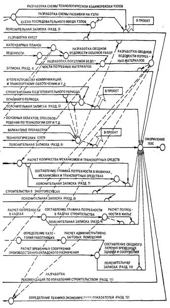 |
Рис. 1. Последовательность решения задач и разработки основных документов ПОС
3.3. Проектирование ПОС крупного и сложного промышленного комплекса осуществляется в три этапа: получение и обработка исходной информации (исходные данные); разработка принципиальных организационно-технологических решений (до получения разработчиками ПОС сводного сметного расчета); завершающий этап разработки ПОС (после получения разработчиком ПОС сводного сметного расчета).
3.4. На первом этапе выполняются:
получение и изучение задания на проектирование;
составление и согласование технических условий на разработку ПОС;
ознакомление с условиями строительства.
3.5. На втором этапе выполняются:
определение принципиальных организационно-технологических решений по отдельным объектам;
вариантные проработки основных организационно-технологических решений;
решение вопросов инженерной подготовки строительной площадки;
увязка принципиальных организационно-технологических решений с разработками других частей проекта;
обработка локальных сметных материалов и составление ведомости объемов работ.
3.6. На завершающем этапе разработки ПОС выполняются:
разработка документов, определяющих основные объемы работ, продолжительность строительства и календарное планирование; расчетная часть; оформление материалов ПОС.
3.7. С целью взаимоувязки архитектурно-строительных решений с требованиями строительного производства ПОС должен разрабатываться одновременно с выполнением строительной и других частей проекта. Отдельные разделы ПОС, составляемые специализированными проектными организациями, должны быть увязаны с общими решениями, принятыми в проекте.
3.8. В ходе определения основных организационно-технологических решений по возведению зданий и сооружений либо отдельных видов строительно-монтажных работ разработчиками ПОС при соответствующих обоснованиях выдаются рекомендации участникам выполнения других разделов проекта в части:
повышения уровня технологичности строительных конструкций;
уточнения объемов земляных работ;
выбора и размещения систем водопонижения;
определения протяженности рельсовых путей башенных, козловых и портально-стреловых кранов;
определения объемов работ по устройству временных дорог внутри строящихся зданий для монтажа каркасов;
устройства оснований для обеспечения устойчивости работы сваебойного оборудования при забивке свай;
организации конвейерных линий для монтажа конструкций.
Эти рекомендации позволяют повысить обоснованность сметной стоимости проекта.
3.9. В качестве первоочередного документа всем участникам разработки других разделов проекта выдается схема разбивки на узлы с перечнем и составом узлов проектируемого комплекса.
3.10. При привлечении специализированных проектных организаций к выполнению отдельных разделов ПОС ведущая проектная организация использует эти решения, увязывая их в едином документе - проекте организации строительства.
К числу вопросов, подлежащих увязке, относятся: определение сроков строительства проектируемых объектов и сооружений с учетом общей нормативной (директивной) продолжительности; уточнение состава и мест размещения временных зданий и сооружений; обеспечение потребностей строительства энергетическими ресурсами.
3.11. Отдельные разделы ПОС, разрабатываемые специализированными проектными организациями, должны выдаваться ведущей организации в срок до получения сводной сметы.
3.12. ПОС на сложные объекты и виды работ должны разрабатываться на основе вариантной проработки основных решений с расчетом сравнительной экономической эффективности вариантов.
3.13. Областью рационального применения вариантных проработок основных решений проектов организации строительства являются: определение способа строительства подземной части наиболее сложных объектов (открытый, закрытый, смешанный); определение рационального комплекта механизмов и соответствующей ему технологии производства строительно-монтажных работ.
Вариантные проработки объемно-планировочных и конструктивных решений с учетом принципиальных положений по организации и технологии строительства промышленного комплекса выполняются в составе соответствующих частей проекта.
3.14. Для завершения разработки ПОС его разработчик должен получить необходимые исходные данные в полном объеме, включая сводный сметный расчет.
3.15. Формы отдельных документов ПОС приводятся в приложениях к настоящему Пособию.
4.1. Исходные данные для разработки ПОС представляются генеральным застройщиком (заказчиком), генподрядной строительной организацией (генподрядчиком) и генеральной проектной организацией (генпроектировщиком).
4.2. Состав и содержание исходных данных для разработки ПОС приведены в табл. 2.
Таблица 2
|
Состав и содержание документа |
|
|
I. ИСХОДНЫЕ ДАННЫЕ, ПРЕДСТАВЛЯЕМЫЕ ЗАКАЗЧИКОМ |
|
|
1. Об использовании источников и порядке энергообеспечения строительства |
Данные о порядке и точках подключения временных инженерных сетей к действующим коммуникациям электроснабжения, сжатого воздуха, кислорода, пара, тепла, горячего, производственного, хозяйственно-питьевого водоснабжения |
|
2. О возможных местах расположения карьеров и отвалов грунта, а также дальности его транспортирования |
Данные о местах складирования избыточного сухого и мокрого грунта, грунта для рекультивации и обратных засыпок. Сведения о местах разработки недостающего грунта для обратных засыпок |
|
3. О составе и характеристике существующих зданий и сооружений, транспортных коммуникаций, которые могут быть использованы для строительных нужд |
Данные о зданиях административного, санитарно-бытового, производственного и складского назначения, автомобильных и железных дорогах с показателями площади, протяженности и сроком эксплуатации |
|
ii. исходные данные, представляемые генподрядчиком |
|
|
1. Перечень основных строительных организаций с характеристикой их производственной мощности |
Наименование организаций, их ведомственная принадлежность, годовая программа, плановая и фактическая среднегодовая выработка на одного работающего, количество трудящихся, плановые показатели по росту производительности труда на ближайшие годы |
|
2. Наличие производственной базы стройиндустрии и возможности ее использования |
Наименование предприятий производственной базы, вид выпускаемой продукции, годовая производительность, объем продукции, которая может быть выделена на строительство данного предприятия (комплекса). Место расположения предприятий и расстояние от проектируемых объектов |
|
3. Сведения о возможности обеспечения строительства рабочими кадрами |
Источники покрытия потребности строительства в рабочих кадрах, дальность перевозки и т. д. |
|
4. Сведения о парке машин и механизмов в организациях, привлекаемых к строительству |
Наименование машин, их тип и марка, количество и т. д. |
|
5. Сведения о выработке основных строительно-монтажных машин, механизмов и средств транспорта, а также данные о директивном повышении выработки машин на ближайшие годы |
Сводный отчет о механизации трудоемких и тяжелых работ (форма № 1-Нт) и данные о показателях работы автотранспортных средств по отчетам производственных автоуправлений, обслуживающих строительство |
|
6. Сведения о наличии в организациях, привлекаемых к строительству, оборудования для электроснабжения строительной площадки, сварочных и других работ |
Наименование и марки оборудования, количество и т.д. |
|
7. Сведения об обеспечении местными строительными материалами |
Наименование строительных материалов, их количество (запасы), отпускная цена, расстояние и вид транспортирования |
|
8. Сведения о наличии в строительных организациях инвентарных (мобильных) подсобно-вспомогательных и обслуживающих зданий и сооружений |
Наименование, тип, количество, характеристика |
|
9. Сведения о наличии в строительных организациях опалубки для возведения монолитных железобетонных конструкций |
Наименование, тип, количество комплектов, общая площадь |
|
10. Сведения о наличии в строительных организациях инвентарных лесов и подмостей |
Наименование, тип, количество |
|
11. Сведения о возможности использования местных транспортных организаций для перевозки строительных грузов и доставки работающих на строительную площадку |
Наименование транспортных организаций, данные о типах и количестве транспортных средств, в том числе выделяемых для обслуживания строительства и перевозки рабочих |
|
12. Сведения о возможности обеспечения рабочих, занятых на строительстве, жилыми и социально-бытовыми помещениями |
Данные о наличии свободного постоянного и временного жилья, его местонахождение. Обоснованная расчетами потребность в строительстве жилья и объектов социально-бытового назначения |
|
III. ИСХОДНЫЕ ДАННЫЕ, ПРЕДСТАВЛЯЕМЫЕ ГЕНПРОЕКТИРОВщиком |
|
|
1. Задание на разработку ПОС |
Основание для разработки, состав и мощность пускового комплекса, сроки строительства, генподрядная строительная организация, сроки и условия поставки технологического оборудования |
|
2. Технико-экономическое обоснование (ТЭО), подтверждающее экономическую целесообразность и хозяйственную необходимость проектирования и строительства предприятия |
Состав и содержание ТЭО установлены Указаниями о порядке разработки и утверждения технико-экономических обоснований строительства по крупным и сложным предприятиям и сооружениям, утвержденными Госпланом СССР и Госстроем СССР от 24.04.1985 г. № 95/60 |
|
3. Проектно-сметная документация |
Основные разделы проекта: общая пояснительная записка к разделам проекта (генеральный план и транспорт, архитектурно-строительная часть, технологическая часть, инженерные коммуникации); материалы инженерно-геологических изысканий; чертежи - ситуационный план, генеральный план, вертикальная планировка, картограмма земляных масс, сводный план инженерных коммуникаций, чертежи архитектурно-строительной части проекта. Сметные документы - объектные и локальные сметы, сводка затрат (сводная смета) |
4.3. Материалы в составе исходных данных, выдаваемых генподрядчиком, должны содержать данные на год, предшествующий планируемому.
4.4. При разработке ПОС специализированной проектной организацией генеральная проектная организация в дополнение к исходным данным табл. 2 представляет составителям ПОС:
сведения об условиях организации проектирования, строительства и обеспечения объекта оборудованием при поставке комплектного импортного оборудования;
количество очередей и наименование пусковых комплексов с указанием их мощностей, производственных площадей, объемов, размеров и прочих характеристик;
стадийность, последовательность, объем и намеченные календарные сроки проектирования, перечень привлеченных к проектированию проектных, изыскательских и научно-исследовательских организаций;
перечень зданий, сооружений и коммуникаций первой очереди строительства с распределением по пусковым комплексам или, если строительство осуществляется в одну очередь, перечень зданий, сооружений и коммуникаций каждого пускового комплекса.
4.5. В целях увязки объемно-планировочных и конструктивных решений с условиями организации строительства и производства работ основные вопросы ПОС разрабатываются одновременно со строительной и другими частями проекта.
5.1. В составе ПОС разрабатываются принципиальные решения узлового метода, создающие основу для его функционирования на всех последующих этапах проектирования, подготовки и управления строительством крупного промышленного комплекса: схема разбивки комплекса на узлы с их перечнем и составом; схема технологической взаимоувязки и энергетического обеспечения узлов; схема последовательности ввода узлов с учетом межузловых ограничений во времени.
5.2. Принципиальные решения узлового метода следует разрабатывать с учетом требований «Руководства по применению узлового метода проектирования, подготовки, организации и управления строительством сложных объектов и крупных промышленных комплексов», выполненного ЦНИИОМТП Госстроя СССР (М.: Стройиздат, 1982), в котором определены состав, содержание документов узлового метода, порядок их разработки, а также основные требования к формированию узлов.
5.3. Формирование узлов следует осуществлять на основе совокупной оценки требований, определяющих рациональные границы узлов, состав и объемы работ по узлам и связанные с этим основные технико-экономические параметры - стоимость, трудоемкость и продолжительность строительства.
5.4. Основными требованиями при формировании узлов являются:
конструктивная завершенность выделяемой части промышленного комплекса (объекта);
обеспечение прочности и устойчивости части здания или сооружения, входящего в состав узла;
законченность отдельного технологического цикла в общей технологии промышленного производства;
возможность производства пусконаладочных работ и сдачи узла по рабочему акту заказчику;
необходимость закрепления за узлами ведущего исполнителя с учетом преобладания работ его профиля;
создание условий для поточного производства работ;
обеспечение эффективной работы строительных машин и механизмов;
возможность открытия в минимально короткие сроки фронта работ для смежных организаций.
При формировании узлов необходимо учитывать характерные особенности сооружаемых комплексов различных отраслей промышленности:
обеспечение завершенности технологического передела компонентов сырья, промышленного продукта или технологического процесса;
последовательное наращивание мощностей.
5.5. Строительные и технологические узлы следует формировать, как правило, в корпусах и сооружениях, в которых осуществляются основные технологические процессы. В составе объектов, входящих в общеплощадочные узлы, отдельно технологические и строительные узлы не выделяются.
5.6. При определении состава и границ технологических узлов следует учитывать, что основным условием является обеспечение возможности проведения пусконаладочных работ и опробования агрегатов узла вне зависимости от готовности других технологических узлов, при этом оборудование и агрегаты узла выполняют один из переделов в общей цепи технологического процесса.
5.7. Основным критерием при определении состава и границ строительного узла является необходимость создания геометрической неизменяемости части здания.
5.8. Общеплощадочные узлы формируются по функциональному признаку. К этому виду узлов следует отнести: подготовку территории строительства; объекты административно-бытового назначения; объекты подсобно-вспомогательного назначения; объекты и сети электроснабжения; объекты и сети энергоснабжения; объекты и сети оборотного водоснабжения; объекты транспортного хозяйства; благоустройство территории строительства.
В зависимости от особенностей конкретного пускового комплекса к числу общеплощадочных могут быть отнесены и другие объекты.
5.9. При определении подузлов в составе технологических узлов следует выделять агрегаты промежуточного передела (черновые, чистовые клети прокатного производства, обогатительную секцию, склад концентрата горнообогатительного производства и т.д.), в строительных узлах выделяются захватки здания или температурные блоки, а в составе общеплощадочных узлов за подузел принимается объект.
5.10. С целью уменьшения объема и трудоемкости разработки организационно-технологической документации узлового метода целесообразно применять типовые решения по узлам.
5.11. Схема разбивки на узлы должна представлять собой план расположения зданий, сооружений и коммуникаций проектируемого комплекса с указанием принадлежности их к определенным узлам (подузлам). Составной частью схемы является перечень и состав узлов, содержащий наименование зданий и сооружений с указанием общего объема строительно-монтажных работ и их трудоемкости.
5.12. Определение перечня и состава узлов следует осуществлять после выделения в составе крупного промышленного комплекса следующих групп зданий и сооружений, в пределах которых целесообразно формировать однотипные узлы:
главные корпуса, где осуществляются основные технологические процессы по выпуску продукции;
здания и сооружения, в которых осуществляются сопутствующие технологические процессы;
вспомогательные здания и сооружения производственного назначения, связанные с обеспечением основных и сопутствующих технологических процессов;
здания и сооружения, не связанные непосредственно с выполнением технологических процессов;
линейные сооружения энергетического, водохозяйственного и транспортного назначения.
5.13. При разработке схемы разбивки на узлы следует использовать следующие исходные данные: титульный список; генеральный план; чертежи технологической и архитектурно-строительной частей проекта; типовые решения по узлам.
5.14. Схему разбивки на узлы следует составлять в такой последовательности: определяется перечень и состав узлов; на схематическом плане зданий и сооружений наносятся границы узлов и подузлов, маркируются объекты в соответствии с перечнем и составом узлов; в таблице перечня и состава узлов заполняются объем строительно-монтажных работ и трудоемкость возведения каждого узла (подузла).
5.15. Организация, разрабатывающая ПОС с применением узлового метода, должна передать всем проектным организациям, участвующим в проектировании, схему разбивки на узлы с перечнем и составом узлов для учета при разработке отдельных частей проекта (технологической, строительной, сантехнической и др.).
5.16. Схема технологической взаимоувязки и энергетического обеспечения узлов должна отражать последовательность выполнения отдельных технологических процессов по каждому узлу и промышленному комплексу в целом с указанием источников энергоснабжения.
5.17. В качестве основных данных для разработки схемы технологической взаимоувязки и энергетического обеспечения узлов должны использоваться: перечень и состав узлов, генеральный план, описание технологического процесса, схема цели аппаратов, схемы снабжения объектов энергетическими ресурсами, водой и т.д.
Схему следует выполнять с использованием условных обозначений, принятых для технологических процессов конкретных отраслей промышленности.
5.18. Схема технологической взаимоувязки узлов и энергетического обеспечения разрабатывается в такой последовательности:
определяется технологическая взаимозависимость узлов;
указывается направление перемещения сырья, полуфабрикатов и готовой продукции последовательно между узлами.
Наносятся на схему источники энергоресурсов и их коммуникации.
5.19. Схема последовательности ввода узлов предназначена для определения ограничений во времени сдачи основных технологических узлов под пусконаладочные работы, обеспечивающих возможность пуска комплекса в установленный срок. На этой схеме указываются сроки подачи сырья и энергетических ресурсов для опробования оборудования каждого узла.
5.20. Исходными данными для разработки схемы последовательности ввода узлов являются: схема разбивки на узлы; схема технологической взаимоувязки узлов и энергетического обеспечения; нормативный (директивный) срок ввода комплекта в эксплуатацию, предварительные соображения по пусконаладочным работам.
5.21. Принцип построения схемы последовательности ввода узлов заключается в том, что начиная с заключительного технологического процесса с учетом необходимого времени для пусконаладочных работ определяются (справа налево) сроки окончания строительно-монтажных работ по каждому узлу в заданной технологической последовательности, т.е. определяются межузловые ограничения во времени. Эти ограничения определяют также сроки подачи энерготехнологических ресурсов на определенные узлы, т.е. окончание пусконаладочных работ на узлах, обеспечивающих работу узлов технологического передела. Межузловые ограничения во времени должны изображаться в масштабе времени.
6.1. В составе ПОС разрабатываются следующие документы, в которых содержатся сведения об основных объемах работ, продолжительности строительства, а также основные положения календарного планирования строительства: комплексный укрупненный поузловой сетевой график; календарный план работ, выполняемых в подготовительном периоде; календарный план строительства; поузловая ведомость объемов основных строительных, монтажных и специальных строительных работ; сводная ведомость объемов основных строительных, монтажных и специальных строительных работ; поузловая ведомость потребности в строительных конструкциях, изделиях, материалах и оборудовании; сводная ведомость потребности в строительных конструкциях, изделиях, материалах и оборудовании.
Информационное содержание перечисленных документов приведено в табл. 1.
6.2. Комплексный укрупненный поузловой сетевой график (КУПСГ) предназначен для определения продолжительности строительства, сроков ввода производственных мощностей в эксплуатацию, последовательности и сроков возведения узлов, сроков выдачи проектно-сметной документации, поставки конструкций, кабельно-проводниковой продукции и технологического оборудования. КУПСГ разрабатывается со степенью детализации, позволяющей проследить во времени весь процесс создания промышленного комплекса или объекта от проектирования до ввода его в эксплуатацию.
6.3. Исходными данными для разработки КУПСГа являются: схема разбивки на узлы; схема последовательности ввода узлов с учетом межузловых ограничений во времени; проектно-сметная документация; нормативная продолжительность строительства или установленный директивный срок ввода промышленного комплекса в действие; сроки поставки основного оборудования, согласованные с поставщиками; основные организационно-технологические решения по возведению комплекса, принятые в ПОС.
6.4. Основные работы и события КУПСГа должны устанавливать: сроки разработки проектно-сметной документации; сроки поставки строительных конструкций, технологического, электротехнического, сантехнического и другого оборудования; очередность и сроки выполнения работ подготовительного периода (устройство дорог, внешних сетей, временных зданий и сооружений и т.п.); продолжительность и очередность строительства основных узлов и объектов комплекса; сроки выполнения пусконаладочных работ и ввода в эксплуатацию технологического оборудования и контрольно-измерительной аппаратуры в разрезе узлов.
6.5. Комплексный укрупненный поузловой сетевой график должен четко отражать три подсистемы единого процесса создания крупного промышленного комплекса: проектирование, материально-техническое обеспечение и строительство.
6.6. Подсистема проектирования должна охватывать все части рабочей документации промышленного комплекса. Для определения временных оценок работ этой подсистемы используются существующие нормативные документы по продолжительности проектирования. График выполнения проектных работ должен предусматривать выдачу проектной документации до 1 июля года, предшествующего началу строительства.
6.7. Подсистема материально-техническое обеспечение должна включать сроки поставки основного технологического оборудования, сборных железобетонных конструкций, металлоконструкций, а также разработку рабочих чертежей нестандартизированного оборудования, нетиповых сборных железобетонных конструкций и металлоконструкций, их изготовление и поставку. Сроки поставки строительных конструкций определяются исходя из опережения сроков монтажа на один месяц, а технологического оборудования - на два месяца.
6.8. Подсистема строительство является основной частью КУПСГа и должна отражать последовательность и сроки выполнения строительно-монтажных работ с учетом организационно-технологических зависимостей и очередности производства работ по узлам. В основу организационно-технологической модели строительства должен быть положен поток, определяющий технологию и сроки строительства узла (объекта).
6.9. Последовательность разработки комплексного укрупненного поузлового сетевого графика:
определение технологической последовательности выполнения основных строительно-монтажных работ в разрезе узлов;
определение последовательности и продолжительности разработки проектно-сметной документации, поставки оборудования и т.п.;
определение параметров работ;
расчет и оптимизация КУПСГа с учетом заданных ограничений.
6.10. Номенклатура работ графика должна быть минимальной, но достаточной для установления связей, обеспечивающих также увязку во времени смежных специализированных потоков работ в пределах одного узла и увязку этих потоков в пределах всего пускового комплекса.
6.11. Комплексный укрупненный поузловой сетевой график выполняется на календарной сетке в масштабе времени со следующим членением, зависящим от продолжительности строительства комплекса (объекта): менее одного года - месяц; более одного года - квартал.
Для отражения совмещения работ в график вводятся полусобытия, которые фиксируют открытие фронта работ для смежных организаций-исполнителей.
6.12. Учитывая, что КУПСГ предназначается для руководителей проектных и строительно-монтажных организаций, а также органов материально-технического снабжения, все события и параметры его работ должны охватывать только комплексные процессы, выполняемые одной организацией, с завершением которых открывается фронт для выполнения других работ по данному узлу или подузлу; возведение конструкций нулевого цикла; монтаж строительных конструкций; общестроительные работы; монтаж мостовых кранов; сантехнические и вентиляционные работы и т.д.
6.13. При строительстве сложного промышленного комплекса на территории действующего предприятия, когда необходимо выполнить большие работы и затратить значительное время на освобождение территории строительства (сносы и переносы действующих производств и сооружений с устройством новых взамен сносимых и т.д.), эти работы включаются в график в виде отдельного периода освобождения площадки строительства, выполняемого либо параллельно, либо с опережением работ подготовительного периода.
6.14. На основе КУПСГа разрабатываются календарные планы строительства и подготовительного периода.
6.15. В календарный план подготовительного периода включаются работы, выполнение которых обеспечивает развертывание строительства основных объектов: освобождение площадки строительства; вертикальная планировка; строительство необходимых временных зданий, сооружений и коммуникаций; геодезическая разбивка; возведение проектируемых постоянных зданий и сооружений, предоставляющих фронт работы для строительства объектов основного периода, а также используемых для нужд строительства и т.д.
6.16. Распределение объемов работ подготовительного периода выполняется по месяцам. В отдельных случаях, в зависимости от продолжительности строительства, распределение объемов работ возможно по кварталам.
6.17. Календарный план строительства крупного и сложного промышленного комплекса является документом, в составе которого определяются очередность и темпы строительства узлов, зданий и сооружений, а также распределение капитальных вложений и объемов строительно-монтажных работ в разрезе узлов.
6.18. Распределение капитальных вложений и объемов работ в календарном плане строительства выполняется по кварталам. Для объектов, продолжительность строительства которых не превышает 1,5 года, целесообразно распределение объемов работ осуществлять по месяцам.
6.19. Для разработки поузловой ведомости объемов строительно-монтажных работ производится выборка объемов работ в физическом выражении из смет к объектам-аналогам, а затем приведение этих объемов к условиям сопоставимости с помощью коэффициентов, учитывающих разницу в параметрах проектируемого объекта и объекта-аналога (площадь застройки, строительный объем, этажность и т.д.).
6.20. На основании поузловой ведомости объемов работ и календарного плана строительства выполняется сводная ведомость объемов основных строительных, монтажных и специальных строительных работ с распределением по срокам, принятым в календарном плане.
6.21. На основании ведомостей объемов основных строительных работ выполняются поузловая и сводная ведомости потребности в строительных конструкциях, изделиях, материалах и оборудовании. При этом обязательно учитываются рекомендации п. 6.7 настоящего Пособия.
6.22. Поузловая ведомость потребности в строительных материалах, полуфабрикатах, деталях и конструкциях выполняется с использованием укрупненных нормативов расхода материалов по видам строительно-монтажных работ по всей номенклатуре поузловой ведомости объемов строительно-монтажных работ с учетом распределения объемов работ по срокам строительства. Кроме того, для этих же целей используются ведомости потребности в материалах, составленные по видам строительных и монтажных работ по ГОСТ 21.109-80*.
6.23. Формы документов, выполняемых в соответствии с рекомендациями настоящего раздела, приведены в прил. 1 - 6.
7.1. В составе ПОС основные решения по инженерной подготовке отражаются в стройгенплане подготовительного периода и в стройгенплане основного периода.
Кроме того, основные решения по инженерной подготовке строительства приводятся в текстовой части ПОС.
7.2. Стройгенпланы подготовительного и основного периодов являются документами, отражающими в пространстве решения ПОС по освобождению и освоению территории строительства, подготовке и развертыванию строительства промышленного комплекса, оснащению площадки ведущими строительными машинами и механизмами, организации и размещению временного строительного хозяйства, обеспечению строительства энергоресурсами и транспортными связями.
7.3. Стройгенплан подготовительного периода должен содержать решения по освобождению площадки, порядку сносов и переносов существующих зданий и сооружений, строительству проектируемых зданий и сооружений, используемых для нужд строительства, а также по созданию временного строительного хозяйства в объеме, обеспечивающем нужды строительства в период возведения нулевых циклов зданий и сооружений. Целесообразно на стройгенплане подготовительного периода отображать решения по организации строительства нулевых циклов как средство скорейшего развертывания работ, выполняемых в основном периоде. Пример стройгенплана подготовительного периода приведен на рис. 2.
7.4. Стройгенплан основного периода должен содержать решения по обеспечению нормального функционирования всех участников строительства во время возведения надземной части зданий и сооружений, а также монтажа оборудования. Стройгенплан основного периода развивает решения стройгенплана подготовительного периода в части использования вновь строящихся и существующих зданий, сооружений и коммуникаций, временного строительного хозяйства, размещения строительно-монтажных механизмов и установок, стендов и площадок укрупнительной сборки и т.д. Пример стройгенплана основного периода приведен на рис. 3.
7.5. Последовательность разработки стройгенпланов приводится ниже:
наносятся строящиеся здания и сооружения;
размещаются башенные и козловые краны с рельсовыми путями, а также стреловые краны и указываются зоны действия каждого из них;
обозначаются направление и последовательность производства строительно-монтажных работ по основным объектам;
наносятся временные железнодорожные пути и автодороги;
размещаются приобъектные складские площадки и стенды для укрупнительной сборки конструкций и оборудования;
выделяются существующие здания, сооружения и коммуникации, подлежащие сносу или переносу, а также используемые для нужд строительства, указывается этапность переключения коммуникаций энергетического и транспортного назначения;
размещаются временные здания и сооружения, механизированные базисные склады строительных конструкций и сборочно-комплектовочные площадки, здания санитарно-бытового и административного назначения, мастерские и т.д.;
наносятся временные сети электроснабжения, водопровода, канализации, связи и др.
7.6. В связи с тем, что подосновой стройгенпланов служит генеральный план проектируемого комплекса, стройгенпланы разрабатываются в том же масштабе.
7.7. Проектирование стройгенпланов необходимо выполнять в тесной увязке с принимаемыми методами производства основных строительно-монтажных работ и комплексным укрупненным поузловым сетевым графиком.
7.8. Стройгенпланы следует разрабатывать без излишней детализации, объем разработки должен отражать решение принципиальных вопросов организации строительства, в том числе обеспечения временными зданиями и сооружениями, а также служить основой для выявления затрат, связанных с определенными условиями производства строительно-монтажных работ.
|
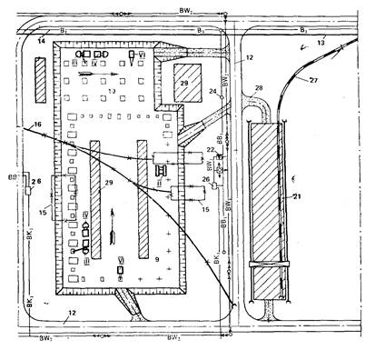 |
Рис. 2. Схема стройгенплана подготовительного периода
Постоянные сооружения: 1 - центральный пункт управления; 2 - отделение компрессии; 3 - насосная высокого давления; 4 - насосная низкого давления; 5 - этажерка синтеза, 6 - гранбашня; 7 - отделение классификации; 8 - станция отгрузки карбамида в автотранспорт; 9 - склад карбамида; 10 - станция отгрузки карбамида в железнодорожные вагоны; 11 - административно-бытовой комбинат; 12 - автодороги; 13 - железнодорожные пути; 14 - водопровод; 15 - разбираемые сооружения; 16 - разбираемые железнодорожные пути.
Временные сооружения: 17 - здание штаба комплекса строительства; 18 - столовая; 19 - бытовой городок строителей; 20 - площадка с эстрадой; 21 - открытый прирельсовый склад; 22 - комплектная трансформаторная подстанция (КТП); 23 - прожекторная мачта; 24 - пожарный гидрант; 25 - площадка для стоянки автотранспорта; 26 - туалет; 27 - железнодорожные пути; 28 - автодороги; 29 - открытые складские площадки.
Строительные машины и механизмы: I - бульдозер; II - копер С-851; III - автобетононасос БН 80-20; IV - автобетоносмеситель; V - автомобильный кран СМК-10; VI - автомобильный кран КС-3562.
7.9. При разработке стройгенпланов необходимо предусматривать максимальное использование для нужд строительства запроектированных постоянных, а также существующих зданий и сооружений (бытовых, автодорог, железнодорожных путей, энергетических объектов и др.), что обеспечивает снижение затрат на строительство временных зданий и сооружений.
7.10. Временные здания, сооружения, коммуникации необходимо располагать с учетом исключения их переустройства в процессе строительства.
7.11. Количество, типы и марки основных строительно-монтажных механизмов и машин, размещаемых на стройгенпланах, последовательность их перемещения на стройплощадке определяются на основании организационно-технологических схем производства работ. При размещении основных строительно-монтажных механизмов и машин следует учитывать необходимость максимального использования их грузоподъемности, удобства организации подъездов и подходов, а также обеспечение условий для производства смежных работ.
7.12. Для рациональной организации внутрипостроечных перевозок грузов стройгенпланами подготовительного и основного периодов должно быть предусмотрено кольцевание внутриплощадочных автодорог. При этом необходимо обеспечить не менее двух подключений к внеплощадочным (магистральным) автодорогам.
7.13. В ПОС необходимо предусматривать максимальное использование действующих постоянных и возводимых в составе проектируемого комплекса зданий и сооружений для обслуживания работающих на строительстве.
К их числу относятся бытовые, столовые, медпункты, конторы, помещения штаба комплекса.
Следует также предусматривать приспособление строящихся и существующих постоянных зданий и сооружений для производственных нужд строительства.
При использовании действующих постоянных и проектируемых зданий и сооружений, не обеспечивающих потребности строительства в стройгенпланах, необходимо предусматривать размещение соответствующих мобильных (инвентарных) зданий бытовых, столовых, контор, помещений штаба комплекса, медпункта, а также производственных мастерских и материально-технических складов.
|
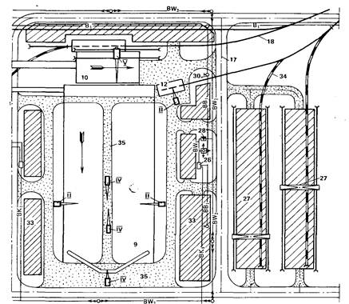 |
Рис. 3. Схема стройгенплана основного периода
Постоянные сооружения: 1 - центральный пункт управления; 2 - отделение компрессии; 3 - насосная высокого давления; 4 - насосная низкого давления; 5 - этажерка синтеза; 6 - гранбашня; 7 - отделения классификации; 8 - станция отгрузки карбамида в автотранспорт; 9 - склад карбамида; 10 - станция отгрузки карбамида в железнодорожные вагоны; 11 - приемная емкость; 12 - пункт выгрузки некондиционного карбомида; 13 - галерея; 14 - перегрузочный узел; 15 - административно-бытовой комбинат; 16 - колонна синтеза на сборочной площадке; 17 - автодороги; 18 - железнодорожные пути; 19 - водопровод; 20 - площадка для домонтажной сборки оборудования.
Временные сооружения: 21 - здание штаба комплекса строительства; 22 - столовая; 23 - бытовой городок строителей; 24 - площадка с эстрадой; 25 - открытая площадка для отдыха рабочих; 26 - туалет; 27 - открытый прирельсовый склад; 28 - комплектная трансформаторная подстанция (КТП); 29 - прожекторная мачта; 30 - пожарный гидрант; 31 - инвентарное ограждение; 32 - площадка для стоянки автотранспорта; 33 - открытые складские площадки; 34 - железнодорожные пути; 35 - автодороги.
Строительные машины и механизмы: I - гусеничный кран СКГ-63; II - гусеничный кран МКГ-25; III - гусеничный кран СКГ-100; IV - гусеничный кран СКГ-40БС; V - башенный кран МСК-10-20; VI - башенный кран БК-583; VII - козловой кран.
7.14. Временные инвентарные здания административного и санитарно-бытового назначения следует располагать группами в специальных городках для строителей, рассредоточенных в пределах строительной площадки с учетом максимального приближения к рабочим зонам.
В городках размещаются: конторы строительных и монтажных управлений, участков, бытовые помещения, столовые-раздаточные, материально-технические склады, производственные мастерские и прочие временные здания, необходимые для обслуживания работающих.
Во временных городках следует предусматривать красные уголки, открытые площадки для проведения культурно-массовых мероприятий, киоски Союзпечати и киоски по продаже прохладительных напитков.
К городкам должны быть подведены сети электро-, водо-, теплоснабжения и предусмотрено благоустройство их территории.
7.15. Размещение складов конструкций, оборудования, материалов и др. должно производиться с учетом рационального использования транспортных средств и наиболее удобной транспортной связи с поставщиками.
7.16. Для обеспечения потребностей строительства в воде сеть временного водопровода, как правило, должна устраиваться объединенной (питьевой, производственной и противопожарной). Временные магистральные сети водоснабжения должны иметь не менее двух точек подключения. Для отдельных потребителей могут быть выполнены тупиковые подводки. Длина таких подводок не должна превышать 200 м.
7.17. Для отвода стоков от временных зданий и сооружений должна устраиваться временная канализация, подключаемая к существующей или проектируемой постоянной сети, выполненной в подготовительном периоде.
7.18. В целях отвода ливневых вод от котлованов на период строительства необходимо предусматривать устройство водоотводных канав и защитных насыпей.
7.19. На стройгенпланах наносятся временные силовые электрические сети напряжением 6 кВ или 10 кВ, комплектные трансформаторные подстанции (КТП), а также прожекторные мачты с питающими низковольтными сетями.
7.20. Система временного электроснабжения строительной площадки должна иметь две точки подключения к источникам питания. При этом те потребители, для которых перерыв в подаче электроэнергии недопустим, должны быть подключены к двум независимым источникам, из которых каждый в отдельности может полностью обеспечить потребность в электроэнергии.
7.21. Размещение на стройгенпланах временных зданий, сооружений, инженерных и транспортных коммуникаций, строительно-монтажных машин и механизмов должно производиться в соответствии с требованиями нормативных документов соответствующего назначения, а также с учетом норм и правил техники безопасности в строительстве, производственной санитарии и мерами противопожарной безопасности.
7.22. В разделах текстовой части ПОС, относящихся к определению основных решений по инженерной подготовке строительной площадки, отражаются вопросы организации работ подготовительного и основного периодов, приводятся краткие указания по устройству складского хозяйства, использованию для нужд строительства существующих и вновь строящихся зданий, сооружений и коммуникаций, размещению временных зданий и сооружений, порядку доставки конструкций, оборудования и стройматериалов на площадку строительства, общие положения по методам и способам возведения зданий и сооружений.
При разработке документов текстовой и графической части этого раздела необходимо, чтобы по своему информационному содержанию они не дублировали, а дополняли друг друга.
Обоснование методов производства строительно-монтажных работ
8.1. В составе ПОС должны быть приведены решения, определяющие и обосновывающие рациональную последовательность возведения зданий и сооружений, а также технологию выполнения основных видов работ. Эти решения отражаются в организационно-технологических схемах и соответствующем разделе текстовой части ПОС.
8.2. К основным строительно-монтажным работам относятся работы, характеризующиеся организационно-технологической сложностью, большой трудоемкостью и в значительной мере оказывающие влияние на продолжительность строительства всего промышленного комплекса. К их числу относятся: земляные работы; свайные работы; устройство фундаментов зданий, технологического оборудования и возведение подземных сооружений; устройство сооружений специальными методами (опускные колодцы, стена в грунте и т.д.); монтаж строительных конструкций; кровельные работы; монтаж технологического оборудования.
Номенклатура основных строительно-монтажных работ уточняется при разработке каждого конкретного ПОС.
8.3. Организационно-технологические схемы производства строительно-монтажных работ должны разрабатываться, как правило, на основные наиболее сложные и трудоемкие здания и сооружения. В необходимых случаях схемы разрабатываются на отдельные узлы (подузлы).
8.4. Организационно-технологические решения должны содержать указания об очередности, способах, направлении и возможном совмещении смежных работ по основным зданиям, сооружениям, узлам (подузлам).
8.5. Организационно-технологические схемы возведения зданий и сооружений, а также технология выполнения основных видов работ решаются с учетом: объемно-планировочных и конструктивных решений зданий и сооружений; направления основного технологического процесса; очередности производства строительно-монтажных работ; сроков поставки строительных конструкций, технологического оборудования и т.д.
8.6. В организационно-технологических схемах необходимо предусматривать:
выполнение работ индустриальными методами с применением наиболее прогрессивных видов машин и механизмов, обеспечивающих высокую производительность труда, исключающих ручной непроизводительный труд рабочих;
организацию поточного производства работ с использованием высокопроизводительных машин и механизмов;
максимально возможное совмещение во времени производства смежных работ;
возможность круглогодичного производства строительно-монтажных работ;
соблюдение правил охраны труда и техники безопасности.
8.7. При выборе решений по производству земляных работ следует учитывать технологическую последовательность возведения подземной и наземной частей зданий (сооружений). Технологическая последовательность возведения зданий (сооружений) оказывает влияние на конструктивную схему котлованов (количество съездов, увеличение габаритов с учетом размещения строительно-монтажных механизмов, устройство креплений и шпунтовых ограждений и т.д.), определение количества захваток, участков, ярусов и очередность выполнения на них земляных работ.
Эти решения должны содержать: конструктивную схему котлованов, траншей и других земляных сооружений и методы их устройства; рекомендации по применению средств механизации; объемы земляных работ; схему перемещения земляных масс на основе исходных данных заказчика (места расположения отвалов и карьеров и т.д.) с указанием объема и дальности перемещения грунта по каждому виду разработок к местам его складирования и использования. Пример принципиальной схемы перемещения земляных масс по группам зданий и сооружений приведен на рис. 4.
Рис. 4. Пример принципиальной схемы перемещения земляных масс по группам зданий и сооружений
8.8. При выборе решений по производству свайных работ необходимо:
предусмотреть выполнение подготовительных работ, предшествующих устройству свайных оснований (устройство оснований для обеспечения устойчивой работы сваебойного оборудования, организация подъездных путей и складских площадок, устройство водоотвода и т.д.);
указать способы погружения свай (забивка, вибропогружение, вдавливание, подмыв и т.д.);
обосновать выбор сваебойных машин и механизмов;
указать способы подачи свай к сваебойным агрегатам;
отразить особые условия производства работ вблизи существующих подземных и надземных сооружений;
привести объемы свайных работ.
8.9. При выборе решений по устройству фундаментов зданий, технологического оборудования и возведению подземных сооружений необходимо: отразить способы бетонирования монолитных и монтажа сборных железобетонных конструкций; определить технологическую последовательность возведения конструктивных элементов и сооружений; предусмотреть широкое применение унифицированных, многократно оборачиваемых систем опалубок, организацию централизованного их изготовления и интенсивной эксплуатации; предусмотреть механизацию подачи, распределения и укладки бетонной смеси с применением высокопроизводительных бетоноукладочных комплексов и другой техники; предусмотреть широкое применение индустриальных способов изготовления и монтажа готовых армоконструкций; отразить способы доставки и складирования сборных железобетонных конструкций; привести объемы работ.
8.10. При выборе решений по возведению подземных сооружений специальными методами (опускной колодец, стена в грунте и т.д.) необходимо предусматривать их опережающее возведение с целью обеспечения фронта для производства последующих видов работ. При этом в организационно-технологических схемах и текстовой части ПОС следует отражать основные принципы их возведения:
установить состав и характер подготовительных работ;
определить способы монтажа сборных и бетонирования монолитных железобетонных конструкций, а также перечень необходимых приспособлений и устройств;
обосновать порядок погружения опускных колодцев и устройства элементов стена в грунте;
произвести выбор рациональных комплектов машин и механизмов;
привести основные объемы работ.
В зависимости от характера, сложности и условий строительства состав и содержание организационно-технологических решений по возведению этих сооружений могут уточняться при разработке конкретного проекта.
8.11. При выборе решений по монтажу строительных конструкций необходимо предусматривать: обоснование рациональных методов и технологическую последовательность монтажа; рекомендации по укрупнительной сборке конструктивных элементов, их доставке, разгрузке и складированию; условия монтажа укрупненными строительно-технологическими блоками и совмещения монтажных работ с другими технологически смежными строительно-монтажными работами; технико-экономическое обоснование целесообразности применения конвейерной сборки и блочного монтажа с учетом навески (установки) на строительные конструкции технологического оборудования, трубопроводов и других коммуникаций электротехнического, вентиляционного, энергетического и санитарно-технического назначения; определение потребных строительно-монтажных механизмов, такелажного оборудования и монтажных приспособлений; определение объемов работ.
8.12. В составе ПОС организационно-технологические решения по кровельным работам целесообразно приводить при площади покрытия основных зданий не менее 20 тыс. м2 с параллельными или перпендикулярными разновысотными пролетами, а также сложностью подачи и транспортированию кровельных материалов.
При выборе решений по производству кровельных работ необходимо предусматривать: технологическую последовательность устройства кровельных покрытий; способы подачи материалов на кровлю (по вертикали) и транспортирование их (по горизонтали) на покрытии; оборудование, машины, приспособления и устройства для комплексной механизации работ; мероприятия, обеспечивающие безопасное ведение работ; объемы работ.
8.13. При выборе решений по монтажу технологического оборудования необходимо предусматривать: обоснование рациональных методов и последовательность монтажа оборудования; условия агрегирования блоков технологического оборудования; рекомендации по комплексной механизации монтажных работ; необходимые меры по усилению несущих конструкций на период монтажа оборудования; способы транспортирования, разгрузки и складирования оборудования; объемы работ.
8.14. Обоснование организационно-технологических решений по производству основных видов строительно-монтажных работ приводится в соответствующем разделе текстовой части ПОС. В этом же разделе приводятся вариантные проработки основных решений с расчетом сравнительной эффективности вариантов на сложные объекты и виды работ. При разработке ПОС целесообразно варьировать комплектами средств механизации, направлением, методами производства работ и т.д.
8.15. При выборе организационно-технологических решений необходимо учитывать методы и мероприятия, обеспечивающие нормальные условия производства работ в зимнее время.
8.16. В составе ПОС следует приводить решения по перемещению тяжеловесного негабаритного оборудования и укрупненных строительных конструкций, содержащие их краткую характеристику, рекомендации по способам укрупнения и перемещения. В текстовой части проекта приводится перечень специальных вспомогательных сооружений, приспособлений, устройств и установок, а также сложных временных сооружений и сетей, рабочие чертежи которых должны разрабатываться проектными организациями в составе рабочих чертежей для строительства объекта. Этот же раздел должен содержать требования, которые следует учитывать в рабочих чертежах в связи с принятыми в ПОС методами возведения строительных конструкций и монтажа оборудования.
Мероприятия по охране труда
8.17. В проекте организации строительства должны быть отражены вопросы техники безопасности и производственной санитарии в зависимости от конкретных условий строительства с учетом соблюдения требований действующих правил СНиП III-4-80 «Техника безопасности в строительстве», а также правил техники безопасности, утвержденных органами государственного надзора, соответствующими министерствами и ведомствами СССР по согласованию с Госстроем СССР.
8.18. Проект организации строительства должен содержать технические решения по созданию условий для безопасного производства основных работ на строительной площадке и объектах в обычных и зимних условиях:
краткое описание и отражение на стройгенплане рациональной организации строительной площадки с расположением временных площадок, дорог и коммуникаций, временных зданий и сооружений, размещение строительно-монтажных механизмов, отражение их зон влияния (рабочих и опасных);
указание основных особенностей техники безопасности при производстве земляных работ, кирпичной кладке, бетонировании монолитных железобетонных конструкций, монтаже строительных конструкций, кровельных и отделочных работах, монтаже технологического оборудования, устройстве сооружений специальными методами и других видов работ в зависимости от конкретных условий;
мероприятия по пожарной безопасности на строительстве.
8.19. В ПОСе необходимо указать расположение осветительных мачт, светильников на опорах низковольтных линий электропередач для достаточного освещения строительной площадки, проходов, проездов и рабочих мест.
Охрана окружающей среды
8.20. Целью подраздела ПОС «Охрана окружающей среды» является разработка предложений по охране основных компонентов окружающей среды на строительной площадке и примыкающей к ней территории - атмосферного воздуха, поверхностных и подземных вод, почв, растительного и животного мира, по соблюдению санитарно-гигиенических и санитарно-эпидемиологических условий при производстве строительно-монтажных работ на строительстве крупных и сложных промышленных комплексов.
8.21. Проектные решения по охране окружающей среды должны разрабатываться в соответствии с требованиями СНиП 3.01.01-85, других нормативных, директивных документов и материалов по охране природы.
8.22. В настоящем разделе Пособия представлены рекомендации по разработке в составе ПОС мероприятий по охране водоемов, почвы и атмосферного воздуха от загрязнения сточными водами и промышленными выбросами, а так же предотвращению потерь природных ресурсов. Рекомендации рассматривают общий состав и содержание мероприятий. В зависимости от отраслевой принадлежности возводимых объектов и специфических условий производства строительно-монтажных работ на конкретных объектах состав мероприятий может быть различным и должен определяться при разработке ПОС с учетом настоящих рекомендаций и отраслевых эталонов.
8.23. Мероприятия по охране окружающей среды должны рассматриваться как сложное многоцелевое средство, главным назначением которого являются: во-первых - сохранение, рекультивация естественного ландшафта; во-вторых - защита от загрязнения среды.
Решения по охране окружающей среды необходимо рассматривать как единый процесс последовательной детализации и уточнения количественной и качественной оценки влияния организационно-технологических решений, принимаемых в ПОС и ППР, на качество окружающей среды. В ПОС также необходимо предусмотреть мероприятия по контролю существующей среды, которые могут произойти во время производства строительно-монтажных работ.
8.24. Мероприятия по охране водоемов, почвы от загрязнения сточными водами и промышленными отходами приводятся в текстовой части ПОС и должны содержать:
краткие сведения об организационно-технологических решениях, связанных с потреблением воды и образованием сточных вод и промышленных выбросов;
сведения о количестве и составе сточных вод с учетом, в необходимых случаях, очистки на временных очистных сооружениях;
организационные мероприятия, направленные на предотвращение загрязнения сточными водами водоемов, в том числе опережающее строительство водоохранных объектов, предусмотренное календарным планом подготовительного периода, решения складского хозяйства, исключающие попадание вредных веществ, содержащихся в материалах и изделиях, используемых для строительства, в дождевые стоки, а также проектные решения по уборке территории;
проектные решения, не допускающие организованный отвод ливневых и других вод со строительных площадок непосредственно на склоны без надлежащей защиты их от размыва;
меры по предотвращению неорганизованного излива подземных вод при достижении водоносных горизонтов в процессе буровых работ, а также в процессе работы водопонизительных установок;
меры по предотвращению загрязнения подземных вод нижележащих горизонтов при производстве работ по искусственному закреплению слабых грунтов;
краткую характеристику систем отвода вод от промывки хлорированной водой магистральных и внутриплощадочных трубопроводов.
8.25. Мероприятия по охране атмосферного воздуха от загрязнения промышленными выбросами предусматриваются в текстовой части ПОС и должны содержать:
краткую климатическую характеристику района возводимого объекта с указанием расположения строительной площадки и особенностей метеоусловий, господствующих ветров и рельефа местности, с данными по имеющимся фоновым концентрациям, создаваемым действующими предприятиями, в том числе котельными, ТЭЦ;
краткое описание строительно-технологических процессов с перечнем источников вредных веществ, выбрасываемых в атмосферу;
перечень проектных решений по усовершенствованию строительно-технологических процессов, обеспечивающих уменьшение вредных выбросов в атмосферу;
требования по предотвращению запыленности и загазованности воздуха при производстве строительно-монтажных работ на селитебных территориях;
решения по уборке строительного мусора с перекрытий зданий и сооружений в закрытых лотках и бункерах-накопителях.
8.26. Мероприятия по восстановлению (рекультивации) нарушенных земель приводятся в текстовой части ПОС и должны содержать:
решения, позволяющие при производстве строительно-монтажных работ приводить затронутые работами земли в состояние, пригодное для использования в сельском хозяйстве, под лесопосадки и другие цели, в том числе организация временного складирования в специально отведенных местах срезанного для хранения почвенно-растительного слоя, определение потребного количества почвенно-растительного грунта для озеленения территории промпредприятия, передача излишков почвенно-растительного грунта сельскохозяйственным организациям;
проектные решения по сохранению всех деревьев, имеющих декоративное и историческое значение;
меры, исключающие срезку древесно-кустарниковой растительности и засыпки грунтом корневых шеек и стволов растущих деревьев и кустарника, не предусмотренные проектной документацией;
условия, предотвращающие повреждение сельскохозяйственных угодий и древесно-кустарниковой растительности при устройстве временных автомобильных дорог и других подъездных путей.
8.27. При строительстве крупных промышленных комплексов в зонах распространения природоочаговых, эндемических и других заболеваний необходимо в ПОС определить мероприятия, способствующие локализации и полной ликвидации таких заболеваний и размещение временного хозяйства, в том числе вахтовых поселков, с учетом санитарно-эпидемиологических требований.
При строительстве в районах с природно-очаговой заболеваемостью особое внимание следует уделить очагам трансмиссионных и паразитарных болезней. Особенно тщательно с точки зрения эпидемиологической опасности должны быть проанализированы почвы, загрязненные органическими веществами (кладбища, свалки, скотомогильники и т.д.), и открытые водоемы.
8.28. В комплекс мероприятий по улучшению санитарно-эпидемических условий помимо предложений по инженерной подготовке территории строительной площадки, мелиорации, озеленению, очистке водоемов, почвы и т.д. должны входить и специальные мероприятия: выбор наиболее здоровых участков местности для размещения временного хозяйства, в первую очередь, вахтовых поселков; специальные требования при производстве работ на территориях бывших кладбищ и свалок; первоочередное проведение специальных мероприятий (в случае наличия очагов с природной заболеваемостью вблизи строительной площадки) по оздоровлению территории (расчистке лесных завалов, оборудованию туалетов и т.д.).
8.29. В зависимости от расположения строительной площадки на территории существующей застройки изменяется состав факторов окружающей среды, влияние которых необходимо учитывать при разработке ПОС.
При расположении строительной площадки на территории, граничащей с территорией сохраняемого естественного или рекультивируемого ландшафта, должно учитываться влияние двух групп факторов:
микроклиматических - инсоляция территории, ветровой режим территории с учетом влияния рельефа местности и застройки (при необходимости включая снегозаносы и пылепереносы);
санитарно-гигиенических - обводнение, а также сбор, очистка и сброс поверхностных вод; загрязнение воздуха автомобильным транспортом, временными предприятиями стройиндустрии; шум, создаваемый тяжелым строительным транспортом, сваебойными механизмами и т.д.; вибрация (транспортные и промышленные источники); электромагнитные излучения (радиостанции, электростанции, ЛЭП, ТП, ОРУ и т.д.); сбор и удаление твердых бытовых отходов.
8.30. В случаях, когда на проектируемой строительной площадке предусматриваются на период строительства источники загрязнения окружающей среды (промышленные объекты временных строительных баз, железные дороги, автомобильные дороги, поля орошения и др.), необходимо учитывать их влияние на качество окружающей среды.
8.31. В ПОСе необходимо предусматривать мероприятия по исключению возможности эксплуатации автотранспортных средств и установок, у которых содержание загрязняющих веществ в выбросах, а также уровень шума, производимого ими при работе, превышает установленные нормативы, а также мероприятия по исключению нарушения правил складирования промышленных и бытовых отходов, несоблюдения требований по охране атмосферного воздуха при сжигании указанных отходов. Необходимо также соблюдать требования по охране атмосферного воздуха от загрязнения при производстве строительно-монтажных работ, при проектировании и размещении временных зданий и сооружений, влияющих на состояние атмосферного воздуха.
8.32. При производстве строительно-монтажных работ в пределах охранных, заповедных и санитарных зон и территорий в ПОС необходимо отразить мероприятия по их осуществлению, регламентированные специальными правилами и положениями.
Инструментальный контроль за качеством сооружений
8.33. Геодезическая подготовка строительной площадки в составе проекта организации строительства производится в следующем порядке:
создание планового геодезического обоснования строительной сетки, позволяющего при рабочем проектировании обеспечить геодезические разбивочные работы в процессе строительства (вынос и закрепление осей проектируемых зданий и сооружений), геодезический контроль точности выполнения строительно-монтажных работ (вынос осей технологического оборудования и их закрепления);
создание высотного геодезического обоснования, позволяющего при рабочем проектировании обеспечить геодезические работы в процессе строительства; высотная разбивка положения конструкций зданий; геодезический контроль точности выполнения строительно-монтажных работ.
8.34. Работы по построению на местности строительной сетки следует выполнять по проекту или схеме, составляемым в соответствии с генеральным планом объекта строительства. В проекте организации строительства указываются координаты и отметки пунктов, к которым должна быть привязана строительная сетка проектируемого объекта.
8.35. Допустимые величины средних квадратических погрешностей построения разбивочной сети строительной площадки определяются по табл. 1 СНиП 3.01.03-84 «Геодезические работы в строительстве» в зависимости от характеристики объектов строительства.
8.36. Геодезический контроль качества выполнения строительно-монтажных работ осуществляется инструментальной проверкой фактического положения в плане и по высоте конструкций зданий, сооружений и инженерных коммуникаций в процессе их монтажа. Инструментальной проверке в процессе монтажа (установки, укладки) подлежат все несущие и ограждающие конструкции зданий и сооружений или их монтажная оснастка, а также подземные и наземные инженерные коммуникации.
ПОС также устанавливает перечень частей зданий, сооружений и конструкций, подлежащих геодезической съемке, от точности положения которых зависит выполнение требований к точности и качеству монтажа конструкций или оборудования на последующих этапах работ.
8.37. В текстовой части ПОС необходимо приводить указания о методах осуществления инструментального контроля за качеством сооружений. В рекомендациях по осуществлению контроля качества земляных сооружений следует определять работы, контролируемые с помощью геодезических приборов.
8.38. В рекомендациях по осуществлению контроля качества свайных работ необходимо отражать:
при устройстве забивных свай: основные требования по геодезической разбивке свайных рядов с допустимыми отклонениями разбивочных осей от проектных; факторы, влияющие на несущую способность свай (методы погружения, режим работы сваебойных механизмов, очередность забивки свай и т.д.);
при устройстве буронабивных свай: методы и оборудование для контроля качества бурения ствола скважины и укладки бетонной смеси; методы контроля свай по окончании их изготовления и твердения бетона (ультразвуковой, динамический, гамма-каротаж, колонковое бурение и т.д.).
8.39. В рекомендациях по осуществлению контроля качества бетонных и железобетонных работ необходимо отражать: методы контроля опалубки, ее геодезического обеспечения при монтаже и эксплуатации; специальные требования к геодезическому обеспечению при возведении монолитных зданий в скользящей опалубке; возможность применения лазерных приборов контроля; возможность применения радиометрических методов, устанавливающих степень уплотнения бетонной смеси; возможность использования импульсного ультразвукового метода определения прочности бетона в готовой конструкции.
8.40. В рекомендациях по осуществлению контроля качества при монтаже строительных конструкций необходимо отражать: методы геодезической выверки геометрического положения конструктивных элементов при помощи теодолитов и зенит-приборов; методы контроля сварных швов (рентгенопросвечиванием, гамма-просвечиванием, радиографией, ультразвуковой дефектоскопией, магнитографическим способом и др.).
9.1. При реконструкции действующих промышленных предприятий первостепенное значение имеют вопросы продолжения их эксплуатации в процессе проведения строительно-монтажных работ.
9.2. Принятые в ПОС организационно-технологические решения должны обеспечивать реконструкцию с минимальными потерями выпуска промышленной продукции. С учетом этого принципиального положения реконструкция должна осуществляться в основном в три этапа: доостановочный, остановочный и послеостановочный.
9.3. Для обеспечения наименьшей продолжительности остановочного этапа необходима тщательная увязка всех частей проекта с решениями по организации и технологии строительства.
9.4. Разработка в ПОС эффективных организационно-технологических решений при проектировании реконструкции должна основываться на подробных и достоверных исходных данных, в первую очередь касающихся сооружений подземного хозяйства, подлежащих разборке.
9.5. В ПОС на реконструкцию в значительной мере возрастает значимость технических задач: методов производства работ, расстановки механизмов, размещения временных зданий и т.д., а также социологических задач, связанных с учетом особенностей производственной среды, в которой должны находиться рабочие в процессе строительно-монтажных работ. Это вызывает необходимость повышения степени детализации решений указанных задач и более строгого их учета при разработке ПОС.
9.6. Характерными особенностями реконструкции являются значительные пространственные и временные ограничения, в результате которых повышается трудоемкость строительно-монтажных работ, ухудшается использование машинного времени строительных машин и механизмов, недоиспользуются транспортные средства, снижается возможность применения типовых конструкций и т.д.
9.7. Производство строительно-монтажных работ при реконструкции имеет свои особенности, которые в значительной мере усложняют их. Основные факторы, вызывающие особенности технологии и организации производства строительно-монтажных работ, следующие:
стесненность строительной площадки, а также необходимость выполнения работ внутри цехов исключает возможность применения высокопроизводительной техники, что приводит к росту объемов, выполняемых вручную;
развитая сеть действующих линий электропередач, надземных и подземных коммуникаций, высокий коэффициент плотности застройки не позволяет нормально организовать труд строителей, применять комплексную механизацию, вызывают дополнительные трудовые затраты и непроизводительные потери рабочего времени;
необходимость выполнения специфических работ по разборке и сносу существующих зданий и сооружений;
выполнение дополнительных мероприятий, обеспечивающих безопасные условия труда, так как работы ведутся в сложных, а порой и вредных условиях;
подчинение строительного ритма основному технологическому процессу реконструируемого предприятия;
концентрация на короткий срок большого количества рабочей силы и строительной техники в период остановки производства связана со значительным снижением производительности труда.
9.8. В условиях реконструкции приобретают особое значение и требуют более тщательной проработки проекты организации строительства. ПОС должен составляться с учетом наиболее прогрессивных решений, высокого уровня индустриализации и комплексной механизации строительно-монтажных работ.
9.9. В ПОС особое внимание должно быть уделено формированию этапов реконструкции, последовательности освобождения площадки, сносу сооружений, переносу коммуникаций и транспортных путей. Принятые в ПОС организационно-технологические решения не должны меняться, ибо это повлечет за собой нарушение всей системы инженерной подготовки.
9.10. Пояснительная записка ПОС в условиях реконструкции должна содержать:
состав работ, выполняемых в период, не связанный с остановкой производственного процесса, и работ, производство которых осуществляется с его полной или частичной остановкой. При этом продолжительность работ остановочного периода должна быть минимальной;
перечень и объемы работ, выполняемые в стесненных и вредных условиях;
порядок оперативного руководства работами по реконструкции;
мероприятия по обеспечению совместной деятельности предприятия и строительной организации;
данные по услугам предприятия в части создания производственных условий для строителей;
порядок использования внутризаводских и внутрицеховых грузоподъемных и транспортных средств предприятий, которые передаются строителям на период реконструкции;
мероприятия по пожаро- и взрывобезопасности;
меры, обеспечивающие устойчивость сохраняемых конструкций при выполнении монтажных и демонтажных работ.
9.11. Разработка стройгенпланов в необходимых случаях должна вестись не по периодам строительства, а по этапам. На стройгенпланах следует выделять действующие здания, сооружения, транспортные пути и инженерные сети, вновь возводимые здания, сооружения и прокладываемые коммуникации, реконструируемые и разбираемые здания и сооружения, разбираемые и перекладываемые инженерные сети, места примыканий новых сетей к существующим, проезды по территории, направления безопасного прохода строителей и эксплуатационного персонала предприятия, зоны повышенной опасности при производстве демонтажных и строительных работ.
9.12. Разработку комплексных укрупненных поузловых графиков следует производить по этапам строительства с большей степенью детализации. В необходимых случаях на остановочный этап разрабатываются календарные посменные графики. В графиках устанавливаются очередность и порядок совмещенного выполнения строительно-монтажных работ с указанием участков и цехов, в которых на время производства строительно-монтажных работ изменяются технологические процессы основного производства, а также когда строительные работы ведутся во время плановых технологических остановок основного производства.
9.13. Приведенные в данном разделе особенности разработки ПОС распространяются также на расширение и техническое перевооружение действующих промышленных предприятий.
10.1. Потребность в основных строительных машинах и транспортных средствах должна определяться на основе физических объемов работ и грузоперевозок, а также фактической (директивной) выработки машин и механизмов, принимаемой по отчетам строительно-монтажной организации за истекший год (форма № 1-НТ) и производственного автотранспортного управления.
10.2. При определении потребности в машинах и механизмах для производства земляных работ составляются ведомости объемов работ с распределением их по годам строительства и способам механизации (прил. 28).
10.3. Расчет общей вместимости ковшей экскаваторов в год qэ, м3, производится по формуле
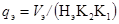
где Vэ - общий объем земляных работ, выполняемых одноковшовыми экскаваторами в каждом году строительства, тыс. м3;
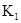
K2 - коэффициент, характеризующий планируемый рост выработки механизмов;
Нэ - норма годовой выработки одноковшовых экскаваторов, тыс. м3, на 1 м3 вместимости ковша в год.
Коэффициент K1 может быть определен из выражения K1 = n/12, где п - число месяцев работы механизма в году, а 12 - число месяцев.
Коэффициент K2 может быть принят 1,03 - 1,05.
Требуемое количество экскаваторов определяется дифференцированно, в зависимости от вместимости ковша (0,25; 0,4; 0,65; 1,0; 1,25 м3) и с учетом глубины котлованов, объемов работ и общей вместимости ковшей qэ.
10.4. Расчет количества бульдозеров qб, шт., ведется по формуле
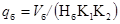
где Vб - общий объем земляных работ, выполняемых бульдозерами в год, тыс. м3;
Нб - норма годовой выработки бульдозера, тыс. м3 на 1 механизм в год.
10.5. Расчет общей вместимости ковшей скреперов в год qс, м3, производится по формуле
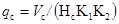
где Vс - общий объем земляных работ, выполняемых скреперами в год, тыс. м3;
Нс - норма годовой выработки скреперов, тыс. м3 на 1 м3 вместимости ковша скреперов в год.
Количество скреперов определяется дифференцированно в зависимости от вместимости ковша с учетом площади, объемов работ и общей вместимости ковшей qс.
10.6. Расчет количества катков для уплотнения грунта qкт, шт., производится по формуле
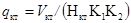
где Vкт - объем насыпей и обратных засыпок, уплотняемых катками, тыс. м3;
Нкт - норма годовой выработки катка, тыс. м3 на 1 механизм в год.
10.7. Расчет количества копров и копрового оборудования для производства свайных работ qкп, шт., ведется по формуле
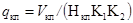
где Vкп - объем свайных работ, тыс. м3;
Нкп - норма годовой выработки копровой установки, тыс. м3.
10.8. Определение потребного количества башенных, гусеничных, пневмоколесных (автомобильных) кранов для производства работ по устройству фундаментов зданий, технологического оборудования и подземных сооружений производится по формуле
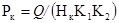
где Рк - суммарная грузоподъемность кранов в год, т;
Q - общая масса грузов, поднимаемых в год, тыс. т;
Нк - норма годовой выработки кранов, тыс. т в год на 1 т максимальной грузоподъемности крана.
Количество, типы и марки кранов определяются исходя из объемно-планировочных и конструктивных характеристик зданий и сооружений, а также организационно-технологических решений по производству строительно-монтажных работ.
10.9. При определении потребности в автобетоноукладочных комплексах (автобетононасосах и автобетоносмесителях) следует учитывать удельный вес объема работ, выполняемого машинами данного вида, условия подачи бетонной смеси, а также особенности бетонируемых конструкций.
10.10. Расчет количества автобетононасосов (АБН) в год М, шт., производится по формуле
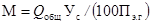
где - общий объем бетонных работ, подлежащий выполнению в течение года, м3;
Ус - удельный вес объема работ, выполняемого автобетононасосами в общем объеме работ, %;
Пэ.г - среднегодовая эксплуатационная производительность автобетононасоса, тыс. м3.
10.11. Количество автобетоносмесителей (АБС), П, шт., необходимых для работы с автобетононасосом в бетоноукладочном комплексе, определяется по формуле
П = TзтQ/Vt + 1, (8)
где Тзт - время загрузки и транспортировки бетонной смеси в зависимости от вместимости смесительного барабана и расстояния перевозки (на 1 рейс), ч;
Q - объем бетонной смеси, подлежащий транспортированию, м3;
V - вместимость смесительного барабана АБС, м3;
t - время на укладку требуемого объема бетона, ч.
10.12. Расчет общей грузоподъемности кранов для монтажных и погрузочно-разгрузочных работ в год Рк, т, ведется по формуле
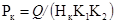
где Q - общая масса строительных конструкций и грузов, поднимаемых кранами при монтажных и погрузочно-разгрузочных работах в год, тыс. т;
Нк - норма годовой выработки кранов, тыс. т в год на 1 т максимальной грузоподъемности крана.
Типы и марки кранов, а также их количество выбираются дифференцированно в зависимости от максимальной массы конструкций и других поднимаемых грузов.
10.13. Расчет общей грузоподъемности автотранспорта К, т, ведется по формуле
K = Q/Пг, (10)
где Q - объем перевозок, т×км;
Пг - годовая производительность автотранспортных средств, т×км.
Годовая производительность автотранспортных средств Пг, т, рассчитывается по формуле
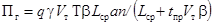
где q - грузоподъемность автотранспортных средств, т;
- коэффициент использования грузоподъемности (по отчетным данным < 1);
Vт - средняя техническая скорость, км/ч;
Т - время работы автотранспортных средств в сутки, ч;
b - коэффициент использования пробега;
Lcp- среднее расстояние перевозок, км;
а - коэффициент использования парка;
п - количество дней работы автотранспортных средств в году;
tпр - время на погрузку и разгрузку, ч.
Значения q; ; Vт; b; Lcp; а; tпр для расчета годовой производительности автотранспортных средств принимаются по отчетным данным автотранспортных предприятий, обслуживающих строительство за истекший год.
Количество автотранспортных средств определяется дифференцированно в зависимости от вида грузов, грузоподъемности и типов автотранспорта.
10.14. Определение потребности в железнодорожном подвижном составе по годам строительства производится на основании расчетных объемов грузооборота, выполняемого в каждом году, и выработки этого вида транспортных средств.
10.15. В процессе расчетов потребности в различных видах машин и механизмов необходимо определять объемы работ, выполняемые различными видами машин по годам строительства. Определение объемов работ производится на основе данных, содержащихся в сводной ведомости основных объемов строительно-монтажных работ с распределением по календарным периодам (годам) строительства.
10.16. По результатам расчетов составляется график потребности в основных строительных машинах, механизмах и транспортных средствах. Форма графика представлена в прил. 7.
10.17. Рекомендации по удовлетворению потребности строительства в строительных машинах и механизмах приводятся в соответствующем разделе текстовой части ПОС.
Электроснабжение
11.1. Электроснабжение строительной площадки может осуществляться от стационарных или передвижных источников. К стационарным источникам электроснабжения относятся главные понизительные подстанции (ГПП) или распределительные пункты (РП). В качестве передвижных источников используются передвижные электростанции или энергопоезда.
11.2. Временное электроснабжение на строительной площадке может осуществляться по следующим схемам:
радиальная - с отдельными линиями для каждой подстанции;
магистральная - при которой одна линия питает до четырех - пяти трансформаторных подстанций;
смешанная - при которой сети для снабжения основных потребителей устраиваются замкнутыми контурами, а подача электроэнергии к прочим потребителям производится по тупиковым электросетям.
Наиболее распространенной и рациональной схемой устройства магистральных воздушных линий, общих для силовых и осветительных нагрузок, является смешанная - радиально-кольцевая. Магистрали прокладываются преимущественно вдоль главных автомобильных дорог и проездов, что позволяет использовать опоры для подвески приборов наружного освещения.
В местах ответвления от магистралей к группам потребителей или к отдельным крупным токоприемникам ставятся предохранительные устройства.
11.3. Магистральные высоковольтные сети строительной площадки выполняются воздушными линиями (ВЛ) напряжением 6 или 10 кВ. В зонах действия строительно-монтажных кранов, а также при пересечении автомобильных дорог и железнодорожных путей устраиваются кабельные электрические сети.
11.4. Для временного электроснабжения строительной площадки применяются комплектные трансформаторные подстанции (КТП).
Количество и тип трансформаторов устанавливаются в зависимости от расчетной потребности мощности. При размещении трансформаторных подстанций их следует располагать в центре нагрузок с максимальным приближением к потребителям для уменьшения радиуса действия низковольтных сетей. Наиболее целесообразными для применения на строительных площадках являются подстанции с трансформаторами мощностью 100 - 630 кВ×А. Радиус действия КТП для силовых нагрузок не должен превышать 400 - 500 м.
11.5. Низковольтные сети, питаемые от КТП, имеют напряжение 380/220 В. Для подачи электроэнергии к источникам потребления применяется трехфазный переменный ток. Напряжение между фазными проводами 380 В используется для питания электродвигателей строительных машин и механизмов. Напряжение 220 В используется для электроосвещения, работы электросварочных трансформаторов, других приборов и аппаратов.
11.6. На ВЛ напряжением до 1 кВ пролеты между опорами составляют 30 - 40 м, а для ВЛ напряжением 6 - 10 кВ - до 60 - 80 м. Расстояние нижней точки провеса от земли для ВЛ напряжением 6 - 10 кВ на строительной площадке должно быть не менее 7 м, а для ВЛ напряжением до 1 кВ - не менее 6 м.
11.7. Строительная площадка и места производства работ должны освещаться светильниками и прожекторами. В качестве осветительных приборов могут быть использованы как прожектора типа ПЗС-35, ПЗС-45, так и ксеноновые лампы со светильниками ДКСТ-20 мощностью 5; 10 и 20 кВт. Расстояние между прожекторными мачтами в зависимости от мощности прожекторов составляет 80 - 250 м.
11.8. Освещенность территории строительства в районе производства работ должна составлять 2 лк. Охранное освещение стройплощадки должно обеспечивать освещенность не менее 0,5 лк.
11.9. Расчет потребности в электроэнергии производится на основной период строительства в такой последовательности:
определяется состав потребителей электроэнергии;
производится расчет паспортной мощности электроприемников повторно-кратковременного режима, приведенной к длительному режиму. Определяется номинальная мощность
Рн = Рпасп 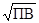
где Рн - номинальная мощность, кВт;
Рпасп - паспортная мощность, кВт;
ПВ - паспортная продолжительность включения.
Производится расчет активной нагрузки токоприемников Ра, кВт,
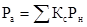
где Кс - коэффициент спроса одного или нескольких однотипных токоприемников.
Определяется расчетная реактивная нагрузки Qp, квар,
Qp = Patgj. (14)
Определяется полная суммарная нагрузка, кВ×А, для выбора мощности трансформаторов
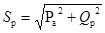
Состав потребителей электроэнергии сводится в таблицу и производится расчет активной и реактивной мощности (прил. 29).
Значения коэффициентов спроса Кс, мощности cosj и продолжительности включения ПВ, а также тригонометрические функции tgj и cosj приведены в прил. 8 и 9.
На основании данных, приведенных в табл. 5, полная суммарная нагрузка для выбора мощности трансформаторов Sp составляет, кВ×А,
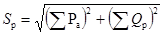
Водоснабжение
11.10. Система временного водоснабжения должна обеспечивать потребности строительной площадки в воде на производственные, хозяйственно-бытовые и противопожарные нужды.
11.11. Временное водоснабжение строительной площадки обеспечивается устройством объединенной системы, которая может быть кольцевой, тупиковой или смешанной. При необходимости хозяйственно-питьевой водопровод может быть выделен в самостоятельную систему.
11.12. Источниками временного водоснабжения могут служить действующие сети промышленного предприятия, расположенные вблизи района строительства или природные источники.
11.13. Колодцы с пожарными гидрантами должны размещаться на расстоянии не более 150 м друг от друга на сетях высокого давления и 100 м - при водопроводе низкого давления.
Расстояние от гидрантов до зданий должно быть не более 50 м и не менее 5 м, а от бровки автодороги - не более 2 м.
11.14. Расчет потребности в воде производится на основной период строительства по потребителям.
Суммарный расчетный расход воды для строительной площадки определяется по формуле
Q = Qпр + Qxоз + Qпож, (17)
где Q - суммарный расчетный расход воды, л/с;
Qпр - расход воды на производственные нужды, л/с;
Qxоз - расходы воды на хозяйственно-бытовые нужды, л/с;
Qпож - расход воды на противопожарные цели, л/с.
Расход воды для обеспечения хозяйственно-бытовых нужд строительной площадки определяется по формуле
Qпр = qпПпКч/t×3600, (18)
где qn - удельный расход воды на производственные нужды, л;
Пп - число производственных потребителей (установок, машин и др.) в наиболее загруженную смену, шт.;
Кч - коэффициент часовой неравномерности водопотребления (см. прил. 10);
t - время работы потребителей, ч.
Расход воды для обеспечения хозяйственно-бытовых нужд строительной площадок определяется по формуле
Qхоз = qхПрКч/3600t + qдПд/60t1, (19)
где qх - удельный расход воды на хозяйственно-питьевые нужды, л (см. прил. 11);
qд - расход воды на прием душа одним работающим, л;
Пр - число работающих в наиболее загруженную смену, чел.;
Пд - число работающих, пользующихся душем, чел.;
t1 - продолжительность использования душевой установки, ч;
Кч - коэффициент часовой неравномерности водопотребления (см. прил. 10).
Расход воды для тушения пожара Qпож определяется в зависимости от степени огнестойкости зданий, их объема и категории пожарной опасности (см. прил. 12, 13).
Диаметр временной водопроводной напорной сети D, мм, следует определять по формуле
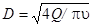
где Q - суммарный расчетный расход воды, м3/с;
- скорость движения воды в трубах, м/с (для малых диаметров 0,6 - 0,9, а для больших - 0,9 - 1,4 м/с).
Теплоснабжение
11.15. Временное теплоснабжение необходимо предусматривать для отопления (вентиляции) и горячего водоснабжения административных, бытовых и подсобно-вспомогательных зданий и сооружений, для обеспечения выполнения отдельных видов строительно-монтажных работ в зимнее время.
11.16. Временное теплоснабжение необходимо проектировать с максимальным использованием постоянных сетей строящихся зданий и сооружений.
В отдельных случаях прокладываются дополнительно участки временных сетей и устанавливаются мобильные котельные установки, различные по типу, мощности и виду используемого топлива.
11.17. Для временных котельных целесообразно использовать инвентарные (мобильные) здания, сооружения и установки соответствующего производственного назначения.
11.18. Максимальный часовой расход тепла на отопление и вентиляцию производственных, жилых и культурно-бытовых зданий определяют по формуле
Q = Qo + Qв, (21)
где Qo и Qв - максимальные часовые расходы тепла на отопление и вентиляцию, Вт, равные:
Qо=aqо(tвн - tно)Vн; (22)
где а - коэффициент, зависящий от расчетных температур наружного воздуха.
Qв=qв(tвн - tнв)Vн, (23)
Значения коэффициента приведены в прил. 14;
qо - удельные тепловые характеристики зданий для расчета отопления, Вт/(м2×К);
qв - удельные тепловые характеристики зданий для расчета вентиляции, Вт/(м3×К);
tно, tнв - расчетные зимние температуры наружного воздуха для отопления и вентиляции, значения которых принимаются по СНиП 2.01.01-82 и СНиП 2.04.05-86;
tвн - расчетная температура воздуха внутри помещений;
Vн - объем здания по наружному отмеру, м3.
Воздухоснабжение
11.19. Потребителями сжатого воздуха на строительной площадке являются пневмомашины и пневмоинструменты.
11.20. Источниками получения сжатого воздуха на строительной площадке являются стационарные (существующие) компрессорные станции и передвижные компрессорные станции.
11.21. Потребность в сжатом воздухе определяется исходя из номенклатуры потребителей с учетом коэффициентов единовременной работы однородных механизмов.
Расход сжатого воздуха определяется по формуле
Q = K1П1F1 + K2П2F2 + ... + KпПпFп, (24)
где K1, K2, ..., Кп - коэффициенты одновременности работы однородных механизмов (см. прил. 15);
П1, П2, ..., Пп - количество однородных механизмов, шт.;
F1, F2, ..., Fп - удельный расход сжатого воздуха, потребляемого пневмомашинами и пневмоинструментами, м3/мин.
Данные по определению расхода сжатого воздуха заносятся в таблицу (прил. 30).
11.22. Расчетная производительность компрессорной установки определяется по формуле
Qрасч = Q/100 (100 + Кк + Ко + Кп + Кн), (25)
где Q - расход сжатого воздуха, м3/мин;
Кк - потери воздуха в компрессоре, 10 %;
Ко - потери воздуха от охлаждения в трубопроводе, до 30 %;
Кп - расход сжатого воздуха на продувку, 4 - 10 %;
Кн - потери воздуха от неплотностей соединений в трубопроводах, 5 - 30 %.
Снабжение кислородом и ацетиленом
11.23. Источниками снабжения кислородом и ацетиленом на строительной площадке являются стационарные и передвижные кислородные установки, кислородно-раздаточные станции, размещаемые в мобильных зданиях.
11.24. Подача кислорода от стационарных и передвижных установок потребителям производится по трубопроводам из стальных бесшовных труб, соединенных сваркой.
11.25. Потребность в кислороде и ацетилене определяется исходя из объема работ по монтажу строительных конструкций и оборудования с учетом принятых темпов строительства.
11.26. Расчет выполняется на основании среднестатических данных о расходе кислорода и ацетилена на 1 т конструкций и оборудования.
На основе данных о среднесуточном расходе кислорода и ацетилена определяется потребное количество баллов или кислородопровода при трубопроводной подаче. Данные для определения потребности в кислороде и ацетилене заносятся в таблицу (прил. 16).
Расход ацетилена и кислорода на единицу измерения см. в прил. 16.
12.1. Определение потребности в кадрах строителей должно производиться на основе: распределения объемов строительно-монтажных работ в денежном выражении по организациям-исполнителям и срокам строительства согласно комплексному укрупненному поузловому сетевому графику и календарному плану; данных о плановой выработке в денежном выражении на одного работающего в разрезе организаций-исполнителей по годам строительства с учетом роста производительности труда; данных о численности работников обслуживающих хозяйств.
Для расчета потребности в кадрах строителей составляется ведомость распределения объемов строительно-монтажных работ в денежном выражении по строительно-монтажным организациям и годам строительства и приводятся плановые выработки на одного работающего по всем организациям-исполнителям (прил. 17).
12.2. Расчет количества работающих основного строительного производства определяется по формуле
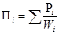
где
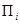
Pi - годовой объем строительно-монтажных работ i-той организации, руб.;
Wi - среднегодовая выработка на одного работающего в i-той общестроительной или специализированной организации, руб.
Численность работников обслуживающих хозяйств при отсутствии данных, представляемых генподрядчиком, определяется:
П2 - число работающих, занятых в обслуживающих хозяйствах и подсобных производствах строительства, составляющее около 20 % численности работающих основного строительного производства П1,
П3 - число работающих, занятых в культурно-бытовых, коммунальных и других учреждениях и организациях, обслуживающих работников строительства, составляет не более 6 % численности работающих основного строительного производства и занятых в обслуживающих хозяйствах (П1 + П2).
12.3. По результатам расчета составляется график потребности в кадрах строителей по годам (см. прил. 18).
12.4. Соотношение категорий работающих принимается в зависимости от отрасли народного хозяйства или вида строительства, %, от общего количества работающих основного строительного производства П1.
Структура работающих в промышленном строительстве приведена в прил. 19.
12.5. В текстовой части ПОС необходимо привести рекомендации по покрытию потребности в работающих по годам строительства с использованием исходным данных генподрядчика.
12.6. При отсутствии возможности обеспечить с помощью коммунального или пригородного транспорта перевозку работников строительных и монтажных организаций на строительную площадку, а также если невозможно организовать специальные маршруты городского пассажирского транспорта (что должно быть подтверждено соответствующим документом исполкома Совета народных депутатов), в ПОС необходимо определить потребность в соответствующем количестве транспорта для этих целей.
12.7. Расчет необходимого количества автотранспортных средств для перевозки работающих ктр определяется по формуле
Ктр = Р/ВА, (27)
где Р - общее количество работающих, перевозимых автотранспортом, чел.;
В - вместимость автобуса, чел.;
А - количество рейсов.
Количество рейсов автобуса рассчитывается по формуле
A = T/t, (28)
где Т - время до начала работ, мин (принимается 60 - 90 мин);
t - продолжительность транспортного цикла, мин, определяемая по формуле
t = t1 + 2S/v60 + t2, (29)
где t1, t2 - время стоянки в местах посадки и высадки работающих, мин (принимается в пределах 3 - 5 мин);
S - расстояние перевозки, км;
v - средняя скорость движения, км/ч.
12.8. В ПОС должны быть решены вопросы социально-бытового обслуживания строителей. При этом особое внимание должно быть уделено вопросам сокращения потерь рабочего времени, повышения производительности труда, улучшения качества выполняемых работ и в конечном счете снижения продолжительности строительства.
12.9. Особое внимание необходимо обратить на организацию общественного питания на строительной площадке. Для этого в ПОС должно быть предусмотрено:
использование проектируемых постоянных столовых, строительство которых должно быть осуществлено в подготовительный период; строительство временных столовых-раздаточных; использование существующих столовых; создание сети буфетов, киосков, передвижных инвентарных вагончиков для продажи продовольственных товаров.
12.10. Для бытового обслуживания рабочих необходимо предусматривать строительство временных помещений, размещаемых в инвентарных мобильных зданиях, использование проектируемых постоянных административно-бытовых сооружений, строительство которых должно быть предусмотрено в подготовительном периоде, а также создание бытовых городков из инвентарных вагончиков для строительных и специализированных организаций с конторскими помещениями.
12.11. В составе ПОС целесообразно предусматривать на строительной площадке организацию пунктов приема в ремонт и чистку одежды и обуви, парикмахерской, промтоварных магазинов и киосков.
12.12. В районах с большой концентрацией рабочих целесообразно предусматривать устройство отдельно стоящих канализационных санитарных узлов.
12.13. Для медицинского обслуживания рабочих должны быть организованы медицинские пункты, при этом в состав медицинского персонала должны входить врачи разных специальностей. На строительной площадке должны быть установлены аптечные киоски.
12.14. В ПОС должны быть решены вопросы перемещения рабочих по строительной площадке к пунктам питания, бытового и медицинского обслуживания с учетом обеспечения минимальных затрат времени и соблюдения безопасности.
12.15. Потребность в жилье и объектах социально-бытового обслуживания определяется на основании требуемого числа работников основного производства, обслуживающих и прочих хозяйств.
Производится расчет общей численности работающих П, нуждающихся в жилой площади,
П = (П1 + П2 + П3) N1 + (П1 + П2 + П3) N2К, (30)
где N1 - количество работающих одиночек, чел.;
N2 - количество работающих семейных, чел.;
К - коэффициент семейности.
Количество семейных и одиночек устанавливается по данным генподрядной организации и зависит от периода строительства. Численность семейных в подготовительном периоде строительства ориентировочно принимается 50 - 60 %, а в основном периоде - 60 - 70 %. Коэффициент семейности принимается равным 1,8 для подготовительного периода и 2,2 для основного периода строительства.
12.16. Расчет необходимой площади жилья и объектов бытового обслуживания производится по формуле
S = SнП, (31)
где S - требуемая площадь объектов жилого и социально-бытового назначения, м2;
Sн - нормативный показатель площади, действующий в данном регионе.
12.17. Потребности в жилье и объектах социально-бытового назначения могут удовлетворяться за счет:
использования собственного жилого фонда;
жилого фонда заказчика;
аренды частного сектора или жилья других ведомств;
строительства из централизованных или собственных средств;
строительства временных зданий.
12.18. Сведения о возможности обеспечения рабочих, занятых на строительстве, жильем и объектами социально-бытового обслуживания должны представляться в исходных данных генподрядного треста.
12.19. В состав объектов социально-бытового обслуживания входят магазины продовольственных и промышленных товаров, клуб, баня, прачечная, школа, детский сад и ясли.
12.20. В случае если заданием на разработку проекта (рабочего проекта) предусматривается применение вахтового метода организации строительства, в составе текстовой части ПОС приводятся соответствующие рекомендации (см. табл. 1).
12.21. Потребность строительства в рабочих кадрах при вахтовом методе определяется с учетом числа работников, находящихся на объекте и на межвахтовом отдыхе.
12.22. Проект вахтового поселка, включающий генеральный план, состав помещений с элементами инфраструктуры, схемы инженерных сетей, коммуникаций и подъездных путей, а также смета на его строительство и содержание должны разрабатываться специализированной проектной организацией.
12.23. Затраты, связанные с применением вахтового метода, определяются в проекте организации строительства и включаются в сводный сметный расчет.
12.24. Решения вахтового метода следует разрабатывать на основе «Рекомендаций по внедрению вахтового метода организации строительства» (М.: Стройиздат, 1984), выполненных ВНИПИ труда в строительстве Госстроя СССР и определяющих порядок его применения.
13.1. Временные здания и сооружения, специально возводимые или приспосабливаемые на период строительства, классифицируются по их назначению: производственные; складские; административные и санитарно-бытовые; транспортные; электроснабжение; энергоснабжение; водоснабжение и канализация; административно-хозяйственная и производственно-диспетчерская связь.
13.2. Определяемые в составе ПОС временные здания и сооружения подразделяются на титульные и нетитульные. Затраты на титульные временные здания и сооружения определяются в процентах от сметной стоимости строительно-монтажных работ проектируемого промышленного предприятия в соответствии со «Сборником сметных норм затрат на строительство временных зданий и сооружений» (СНиП IV-9-84. Приложение).
Расходы по возведению, сборке, разборке, амортизации, текущему ремонту и перемещению нетитульных временных зданий и сооружений учитываются нормами накладных расходов. Перечень титульных и нетитульных временных зданий и сооружений приведен в СНиП IV-9-84 «Правила разработки и применения сметных норм затрат на строительство временных зданий и сооружений».
13.3. Для временного строительства необходимо применять мобильные (инвентарные) здания и сооружения. Проектирование и применение неинвентарных временных зданий и сооружений допускается только в виде исключения при соответствующем обосновании с учетом перспективы их последующего использования для строительства других комплексов.
13.4. С целью уменьшения объемов временного строительства в ПОС необходимо установить возможность частичного или полного использования существующих постоянных или временных зданий и сооружений, а также обеспечить максимальное использование для нужд строительства зданий и сооружений строящегося комплекса с обеспечением их первоочередной постройки.
13.5. Сводная ведомость временных зданий и сооружений (см. прил. 27) составляется по результатам расчетов, приведенных ниже.
Здания административного и санитарно-бытового назначения
13.6. К зданиям административного назначения относятся: конторы; диспетчерские; помещения для проведения занятий и культурно-массовых мероприятий.
К зданиям санитарно-бытового назначения относятся: гардеробные; помещения для обогрева, кратковременного отдыха и сушки одежды рабочих; душевые; столовые; здравпункты, помещения для гигиены женщин; санитарные узлы.
13.7. Расстояния от рабочего места до зданий административного и санитарно-бытового назначений не должны превышать норм, приведенных в СНиП II-92-76 «Вспомогательные здания и помещения промышленных предприятий»:
до пунктов питания - не более 300 м; до помещений для обогревания работающих - не более 150 м; до санузлов - не более 150 м; до гардеробных, душевых, умывальных - не более 500 м.
13.8. На строительстве крупных промышленных комплексов целесообразно предусматривать также здание административного центра - штаба комплекса строительства с зоной отдыха, включающей столовую, киоск, буфеты, стенды с газетами, открытую эстраду и т.д.
13.9. Потребная площадь временных зданий и сооружений административного и санитарно-бытового назначения определяется на основании числа работающих, занятых на производстве строительно-монтажных работ П1.
Расчет работающих представлен в прил. 31.
13.10. Общая требуемая площадь зданий административного и санитарно-бытового назначения Sтр определяется по формуле
Sтр = SнN, (32)
где Sн - нормативный показатель площади (см. прил. 20 и 21);
N - число работающих (или их отдельных категорий) в наиболее многочисленную смену, чел.
При определении площади конторских помещений для линейного персонала стройки (начальников участков, прорабов, мастеров и пр.) N принимается по числу работающих в наиболее многочисленную смену, инженерно-технических работников (ИТР), служащих, младшего обслуживающего персонала (МОП).
При определении площади красного уголка N принимается по числу работающих в наиболее многочисленную смену с учетом того, что линейный персонал ИТР, служащие, МОП составляют 50 %.
При определении потребной площади диспетчерской количество диспетчеров принимается исходя из условий строительства по согласованию с генподрядчиком.
При определении площади гардеробных N равно общему числу рабочих.
При определении площади душевых N принимается по числу рабочих в наиболее многочисленную смену.
Площадь, необходимая для умывальных и столовых, принимается по числу работающих в наиболее многочисленную смену с учетом того, что линейный персонал ИТР, служащие, МОП составляют 50 %.
При определении площади сушилок и помещений для обогревания рабочих N принимается по числу рабочих в наиболее многочисленную смену.
При определении площади санузлов N принимается по числу работающих в наиболее многочисленную смену. При этом учитывается, что в наиболее многочисленную смену линейный персонал ИТР, служащие, МОП составляют 60 % с учетом коэффициентов 0,7 и 0,3, учитывающих соответственно соотношение числа мужчин и женщин.
Площадь здравпункта определяется в зависимости от количества работающих (см. прил. 22).
Открытые механизированные склады и площадки укрупнительной сборки. Складское хозяйство
13.11. Временное складское хозяйство состоит из открытых площадок, навесов и закрытых (отапливаемых и неотапливаемых) помещений. Выбор вида складов зависит от требований, предъявляемых к хранению строительных материалов, конструкций и оборудования.
13.12. Потребность в складском хозяйстве для временного хранения стройматериалов определяется с учетом максимального использования существующих баз материально-технического снабжения и строящихся постоянных зданий и сооружений.
13.13. Закрытые склады предусматриваются для хранения материалов, изделий, приборов, оборудования, устройств, открытое содержание которых не допускается.
13.14. Открытые склады подразделяются на базисные механизированные и приобъектные. Базисные механизированные склады предназначаются для складирования, сортировки, комплектации и укрупнительной сборки железобетонных, стальных конструкций, а также технологического оборудования. Габариты этих складов устанавливаются согласно расчету с учетом параметров козловых или башенных кранов, обслуживающих эти склады.
13.15. Приобъектные складские площадки должны размещаться, как правило, в зоне действия строительно-монтажных кранов и иметь подъезды от основных магистралей.
13.16. Склады должны, как правило, сооружаться на площадках, не подлежащих застройке в течение всего периода их эксплуатации.
13.17. На основании сводной ведомости объемов работ определяется годовой объем монтируемых сборных железобетонных и металлических конструкций в наиболее интенсивном году строительства (прил. 32). При этом из расчетного объема каждого вида основных сборных железобетонных конструкций, подлежащих хранению на складе, 15 % подается под монтаж, минуя склад.
13.18. Общее количество конструкций Р, подлежащих хранению на складе, определяется по формуле
P = Qa/Tnk, (33)
где Q - общий объем (масса) конструкций, подлежащих хранению на складе, м3 (т);
а - коэффициент неравномерности поступления конструкций (значение коэффициента приведено в прил. 23);
Т - продолжительность расчетного периода, принимаемая по комплексному укрупненному поузловому сетевому графику, мес.;
п - норма запаса, принимаемая для железобетонных конструкций 1,5 мес., для металлургических конструкций - 3 мес.;
k - коэффициент неравномерности потребления конструкций в течение расчетного периода (значение коэффициента приведено в прил. 23).
13.19. Результаты определения количества конструкций, подлежащих хранению на складе, представлены в табл. 3.
Таблица 3
|
Конструкции |
Объем конструкций, подлежащих хранению на складе, м3/т |
|
|
Сборные железобетонные: |
||
|
1 |
Колонны |
Р1ж |
|
2 |
Балки |
Р2ж |
|
3 |
Стеновые панели |
Р3ж |
|
4 |
Стропильные балки и фермы при хранении в вертикальном положении |
Р4ж |
|
5 |
Плиты перекрытий и покрытий |
Р5ж |
|
Металлические |
||
|
1 |
Колонны |
Р1к |
|
2 |
Подкрановые балки |
Р2к |
|
3 |
Стропильные фермы при хранении в вертикальном положении |
Р3к |
|
4 |
Прогоны, фахверки, связи |
Р4к |
|
5 |
Листовые конструкции |
Р5к |
|
6 |
Прочие |
Р6к |
13.20. Требуемая площадь склада с учетом проходов для сборных железобетонных конструкций S1, м2, определяется по формуле
S1 = P1ж/V + P2ж/V + P3ж/V + P4ж/V + P5ж/V. (34)
Требуемая площадь склада с учетом проходов для металлических конструкций S2, м2, определяется по формуле
S2 = P1к/V + P2к/V + P3к/V + P4к/V + P5к/V + P6к/V, (35)
где P1ж, P2ж, P3ж, P4ж, P5ж - объем сборных железобетонных конструкций, подлежащих хранению на складе, м3;
P1к, P2к, P3к, P4к, P5к, P6к - объем металлических конструкций (по конструктивным элементам), подлежащих хранению на складе, т;
V - показатели объема и массы конструкций, укладываемых на 1 м2 площади склада (см. прил. 24 и 25).
Общая площадь складов Sобщ для хранения сборных железобетонных и стальных конструкций составляет:
Sобщ = S1 + S2. (36)
13.21. Потребная площадь площадок для укрупнительной сборки оборудования Роб определяется из условий его хранения на складах УКСа, которое по ходу монтажа передается монтажным организациям для комплектации, ревизии и укрупнительной сборки. Количество оборудования, находящегося на площадках укрупненной сборки, определяется по формуле
Pоб = Qоб/Tпк, (37)
где Qоб - масса оборудования, подлежащего комплектации, ревизии и укрупнительной сборке, т;
Т - продолжительность монтажа оборудования согласно КУПСГ, мес.;
п - норма запаса, принимаемая 1,5 мес.;
к - коэффициент неравномерности монтажа, равный 1,3.
Потребная площадь сборочно-укрупнительных площадок определяется по формуле
S3 = Роб/V, (38)
где V - норма хранения оборудования на 1 м2 склада (см. прил. 26).
Здания и сооружения производственного назначения
13.22. При строительстве промышленных комплексов потребность в изделиях и конструкциях целесообразно удовлетворять в основном за счет централизованных поставок с предприятий стройиндустрии, расположенных в данном районе. Перечень предприятий и производств, обеспечивающих строительство основными конструкциями, изделиями и материалами, включается в раздел «Исходные данные для разработки ПОС».
13.23. В необходимых случаях в ПОС предусматривается строительство только отдельных приобъектных и доводочных мастерских, установок по приготовлению бетона, раствора, асфальтобетона, мастик и других полуфабрикатов, а также изготовление обустройств по обслуживанию и текущему ремонту строительных машин и транспортных средств.
13.24. Временные здания и сооружения производственного назначения размещаются на строительной площадке с учетом их максимального приближения к строящимся объектам, потребляющим большую часть выпускаемой ими продукции.
Транспортное хозяйство
13.25. В ПОС необходимо предусматривать временное транспортное хозяйство, которое включает автодороги, железнодорожные пути.
13.26. Временные автодороги на строительной площадке в основном подразделяются на два типа в зависимости от назначения и интенсивности движения: магистральные и подъездные.
13.27. К магистральным автодорогам относятся автодороги с интенсивностью движения автотранспорта в двух направлениях от 200 до 1000 машин в сутки, по которым производится основная перевозка грузов.
13.28. К подъездным автодорогам относятся автодороги с интенсивностью движения автотранспорта в одном направлении менее 15 автомобилей в час и по которым доставляются грузы к строящимся объектам.
13.29. В зависимости от интенсивности движения, типа и массы автотранспорта, местных условий применяются следующие виды автодорог: грунтовые профилированные; грунтовые профилированные с улучшенной проезжей частью; с камневидным покрытием; с покрытием из сборных железобетонных плит (с учетом не менее трехкратной оборачиваемости), монолитного железобетона или асфальтобетона.
13.30. Для подъездных автодорог применяются в основном грунтовые профилированные с улучшенной проезжей частью, т.е. укрепленной шлаком, гравием, а также дегтевым или битумным вяжущим веществом.
13.31. Внутрипостроечные автодороги проектируются с учетом максимального использования трасс строящихся постоянных автодорог. В этом случае строительство автодорог осуществляется в две стадии:
возводится дорожное основание по основному проекту с устройством временного покрытия;
перед сдачей автодороги заказчику производится ремонт основания и устраивается покрытие по основному проекту.
Организация внутрипостроечных перевозок
13.32. В ПОС указывается порядок организации внутрипостроечных перевозок с разграничением грузопотоков по видам транспорта: автодорожного, железнодорожного и водного.
13.33. Характер внутрипостроечных перевозок определяется конкретными условиями. Наиболее распространенной схемой внутрипостроечных перевозок при строительстве крупных промышленных комплексов является транспортировка грунта, строительных материалов, изделий, конструкций, технологического оборудования и т.д. автомобильным транспортом, а при соответствующем технико-экономическом обосновании - автомобильным в сочетании с железнодорожным транспортом.
13.34. Доставка металлических конструкций, технологического оборудования на базисные склады производится железнодорожным транспортом по существующим, вновь строящимся или временным железнодорожным путям.
Тяжелые, крупногабаритные конструкции и технологическое оборудование рекомендуется подавать под монтаж без промежуточного складирования.
13.35. Для бесперебойной работы автомобильного транспорта необходимо предусмотреть не менее двух въездов на строительную площадку.
14.1. В целях обеспечения надежности функционирования строительства и координации деятельности всех строительно-монтажных и специализированных организаций на строительной площадке в составе ПОС необходимо разрабатывать рекомендации по организации системы управления строительством, включая формирование специального органа - штаба управления строительством пускового комплекса, в функции которого должны входить:
обеспечение организационно-технологического взаимодействия всех организаций и подразделений, занятых в строительстве;
осуществление оперативного планирования и контроля за ходом строительства на основе организационно-технологической документации;
диспетчерский контроль за обеспечением строительства всеми видами материально-технических, энергетических и трудовых ресурсов;
рассмотрение, согласование и контроль за выполнением решений проекта организации строительства и проектов производства работ;
контроль за соблюдением на строительной площадке правил техники безопасности и промсанитарии;
решение вопросов организации всех видов транспортных перевозок;
решение социологических вопросов;
организация сдачи в эксплуатацию законченных объектов и контроль за оформлением приемосдаточных актов, включая акт Государственной комиссии.
14.2. Для регулирования объема информации, поступающей на более высокие уровни управления и повышения качества принимаемых решений, в рекомендациях ПОС по управлению строительством все строительные, технологические и общеплощадочные узлы возводимого комплекса группируются в подкомплексы.
14.3. При разработке рекомендаций по управлению строительством в составе ПОС следует руководствоваться «Временным положением об управлении строительством сложных объектов и крупных промышленных комплексов» (Киев: ЦБТИ Минтяжстроя УССР, 1980).
14.4. Важным звеном управления строительством крупного и сложного промышленного комплекса является диспетчерская служба. В составе ПОС необходимо разрабатывать рекомендации по организации системы оперативно-диспетчерской связи с учетом требований «Методических рекомендаций по организации системы оперативно-диспетчерского управления в строительстве» (М.: ЦНИИОМТП, 1983).
14.5. В этих целях устраиваются телефонная связь (производственно-диспетчерская и административно-хозяйственная), радиосвязь, телеграфная связь, производственная громкоговорящая поисковая связь и установки промышленного телевидения.
Выбор вида связи зависит от конкретных условий строительства. Радиосвязь применяется в случаях, когда проводные средства не могут обеспечить необходимой оперативности или применение их нецелесообразно.
14.6. В здании штаба управления строительства необходимо предусматривать помещения для размещения средств связи и диспетчерской службы.
15.1. На основании материалов всех частей ПОС в его составе необходимо приводить следующие технико-экономические показатели:
общая продолжительность строительства, в том числе продолжительность подготовительного периода и периода монтажа оборудования, мес;
максимальная численность работающих, чел.;
затраты труда на выполнение строительно-монтажных работ, чел.-дн.
15.2. Технико-экономические показатели представляются в текстовой части ПОС.
|
___________________________________________________________________________ (наименование проектируемого комплекса) Форма
Примечание. Над чертой приводятся объемы капитальных вложений, под чертой - объемы строительно-монтажных работ. Главный инженер проекта _________________________ (подпись) Согласовано: Заказчик _________________________ (подпись) Руководитель подрядной организации _________________________ (подпись) |
|||||||||||||||||
|
Форма ___________________________________________________________________________ (наименование проектируемого комплекса)
Примечание. Над чертой приводятся объемы капитальных вложений, под чертой - объемы строительно-монтажных работ. Главный инженер проекта _________________________ (подпись) Согласовано: Заказчик _________________________ (подпись) Руководитель подрядной организации _________________________ (подпись) |
|||||||||||||||||||||||||||||||||||||||||||||||||||||||||||||||||||||||||||||||
Форма
|
№ узлов |
Узлы |
Основные объемы работ |
|||||||||||||
|
земляные работы, м3 |
устройство монолитных бетонных, железобетонных конструкций, м3 |
монтаж сборных железобетонных конструкций, м3 |
монтаж стальных конструкций, т |
устройство кирпичной кладки, м3 |
отделочные работы, м2 |
устройство кровли, м2 |
устройство полов, м2 |
заполнение проемов, м2 |
монтаж технологического оборудования, т |
укладка трубопроводов, м |
укладка железнодорожных путей, м |
устройство автодорог, м2 |
|||
|
выемка |
насыпь |
||||||||||||||
Примечание. Перечень основных объемов работ устанавливается в зависимости от вида и особенностей строительства.
|
Форма
Главный инженер проекта _________________________ (подпись) Согласовано: Заказчик _________________________ (подпись) Руководитель подрядной организации _________________________ (подпись) |
||||||||||||||||||||||||||||||||||||||||||||||||||||||||||||||||
Форма
|
№ узлов |
Узлы |
Конструкции, изделия, материалы, оборудование |
||||||||||||||||||
|
сборные железобетонные конструкции, м3 |
стальные конструкции, т |
деревянные конструкции, м3 |
сталь стержневая арматурная, т |
сталь сортопрокатная конструкционная, т |
прокат листовой рядовой, т |
рельсы, т |
трубы стальные, т |
трубы чугунные, т |
кирпич, тыс. шт. |
щебень, м3 |
гравий, м3 |
лес круглый, м3 |
асбест, т |
цемент, т |
стекло строительное, м2 |
оборудование, стоимость которого включается в стоимость строительно-монтажных работ, тыс. руб. |
кабельная продукция по основным маркам, тыс. руб. |
оборудование и КИП (технологическое, энергетическое, подъемно-транспортное и т.д.), тыс. руб. |
||
Примечания: 1. Номенклатура конструкций, изделий, материалов и оборудования должна быть определена в зависимости от вида и особенностей строительства.
2. Над чертой указывается общая потребность в материалах, под чертой - потребность (за исключением материалов для изготовления конструкций и изделий на предприятиях строительной индустрии).
|
Форма
Примечания: 1. Номенклатура конструкций, изделий, материалов и оборудования должна быть определена в зависимости от вида и особенностей строительства. 2. Над чертой указывается общая потребность в материалах, под чертой - потребность (за исключением материалов для изготовления конструкций и изделий на предприятиях строительной индустрии). Главный инженер проекта _________________________ (подпись) Согласовано: Заказчик _________________________ (подпись) Руководитель подрядной организации _________________________ (подпись) |
||||||||||||||||||||||||||||||||||||||||||||||||||||||||||||||||
Форма
|
№ п.п. |
Машины и механизмы |
Краткая техническая характеристика |
Потребность по годам строительства, шт. |
|||
|
1-й |
2-й |
3-й |
и т.д. |
|||
|
Электроприемники |
Кс |
cosj |
ПВ-1 |
|
Экскаваторы с электроприводом |
0,4 - 0,6 |
0,5 - 0,6 |
0,4 |
|
Растворные и бетонные узлы |
0,5 - 0,6 |
0,65 |
1,0 |
|
Механизмы непрерывного транспорта |
0,6 - 0,7 |
0,4 - 0,6 |
1,0 |
|
Козловые краны |
0,35 |
0,5 |
0,5 |
|
Башенные » |
0,25 - 0,35 |
0,5 |
0,25 |
|
Лебедки приводные |
0,2 - 0,3 |
0,5 |
0,4 |
|
Однопостовые сварочные преобразователи |
0,5 |
0,7 - 0,75 |
0,6 |
|
Преобразователи многопостовой сварки |
0,7 |
0,7 |
0,6 |
|
Сварочные трансформаторы |
0,35 |
0,4 - 0,5 |
0,6 |
|
Однопостовые сварочные выпрямители |
0,6 |
0,58 |
0,6 |
|
Шестипостовые » » |
0,6 |
0,7 |
1,0 |
|
Переносные механизмы |
0,1 |
0,4 |
0,6 - 0,8 |
|
Оборудование для арматурных работ |
0,45 |
0,5 |
1,0 |
|
Водопонизительные установки |
0,5 - 0,6 |
0,7 |
1,0 |
|
Электроинструмент |
0,25 |
0,3 - 0,45 |
0,4 |
|
Вибраторы переносные |
0,4 |
0,45 |
0,6 - 1,0 |
|
Установки электропрогрева бетона |
0,6 - 0,8 |
0,85 |
1,0 |
|
Внутреннее электроосвещение |
0,8 - 0,9 |
1,0 |
1,0 |
|
Наружное » |
1,0 |
1,0 |
1,0 |
|
Насосы, вентиляторы, компрессоры |
0,6 - 0,7 |
0,7 - 0,8 |
1,0 |
|
tgj |
0,3 |
0,4 |
0,5 |
0,6 |
0,7 |
0,75 |
0,8 |
0,9 |
1 |
1,1 |
1,2 |
|
cosj |
0,96 |
0,93 |
0,9 |
0,86 |
0,82 |
0,8 |
0,78 |
0,74 |
0,71 |
0,67 |
0,64 |
|
tgj |
13 |
1,4 |
1,5 |
1,6 |
1,7 |
1,8 |
2 |
2,2 |
2,3 |
3 |
- |
|
cosj |
0,61 |
0,56 |
0,55 |
1,53 |
0,5 |
0,46 |
0,45 |
0,41 |
0,4 |
0,3 |
- |
|
Вид потребления |
Коэффициент Кч |
|
Производственно-строительные расходы, в среднем по площадке |
1,25 - 1,4 |
|
Строительные работы |
1,5 |
|
Силовые установки |
1,1 |
|
Подсобные предприятия |
1,25 |
|
Транспортное хозяйство |
1,5 - 2 |
|
Санитарно-бытовые расходы непосредственно на строительстве |
2 - 2,75 |
|
Санитарно-бытовые расходы в административно-конторских зданиях |
2 |
|
Душевые |
1 |
|
Потребитель и вид расхода воды |
Измеритель |
Норма расхода воды потребителями, л |
|
Хозяйственно-бытовые нужды на строительных площадках при отсутствии канализации |
1 работающий в смену |
15 |
|
То же, при наличии канализации |
то же |
25 |
|
Душ |
1 потребитель |
25 - 30 |
|
Столовая |
то же |
10 - 15 |
|
Приготовление и укладка бетона, включая промывку инертных, но без поливки конструкций; суммарный расход |
1 м3 бетона |
2250 - 3000 |
|
То же, при незначительном загрязнении инертных |
то же |
1500 - 2000 |
|
Поливка бетона в летнее время в климатических условиях средней полосы |
1 м3 бетона/сут |
200 - 400 |
|
Изготовление бетонных изделий на заводе без промывки и поливки готовых изделий |
1 м3 изделий |
200 - 300 |
|
То же, железобетонных изделий |
то же |
150 - 250 |
|
То же, с применением пропаривания |
» |
400 - 500 |
|
Поливка заводских изделий из железобетона |
» |
200 - 250 |
|
Кирпичная кладка с приготовлением раствора |
1000 шт. кирпича |
90 - 230 |
|
Поливка кирпича |
то же |
200 - 250 |
|
Кладка из легкобетонных пустотелых и сплошных кирпичей с приготовлением раствора |
1 м3 кладки |
50 - 240 |
|
Приготовление известкового раствора, включая расход воды на гашение извести и приготовление известкового молока |
1 м3 раствора |
1000 - 1400 |
|
То же, сложного раствора |
то же |
600 - 1000 |
|
Приготовление цементного раствора |
» |
150 - 300 |
|
Приготовление известкового раствора, без расхода воды на гашение извести |
» |
210 - 300 |
|
Оштукатуривание вручную готовым раствором |
1м2 поверхности |
2 - 6 |
|
Приготовление бетона в бетоносмесителях |
1 м3 бетона |
225 - 325 |
|
Устройство на уплотненном основании подстилающего слоя (подготовки) с проливкой водой или раствором |
1 м2 подготовки |
650 - 700 |
|
Устройство на уплотненном основании бетонной подготовки с приготовлением бетона |
то же |
1300 - 1400 |
|
Устройство и отделка цементных полов при готовом основании |
1 м2 пола |
18 - 20 |
|
Устройство бетонных полов при готовом основании |
то же |
25 - 30 |
|
Устройство полов из метлахских плиток при готовом основании |
» |
5 - 6 |
|
Устройство кровли из рулонных материалов по железобетонным плитам покрытия |
1 м2 кровли |
4 - 11 |
|
Устройство и обмуровка боровов |
1 м3 кладки |
100 - 120 |
|
Устройство бутовых и кирпичных фундаментов печей и котлов |
то же |
50 - 75 |
|
Грузовые автомобили (заправка, обмывка) в среднем |
1 сут |
300 - 400 |
|
Тракторы (заправка, обмывка) в среднем |
» |
300 - 600 |
|
Ремонтно-механические мастерские |
1 станко-ч |
80 - 100 |
|
Механические мастерские |
то же |
35 - 45 |
|
Столярные мастерские |
1 верстак |
20 - 25 |
|
Гидравлическое испытание водопроводных труб диаметром 200 - 800 мм |
1 м длины |
100 - 1300 |
|
Малярные работы |
1 м2 поверхности |
0,5 - 1 |
|
Степень огнестойкости здания |
Категория производства по пожарной опасности |
Объем здания, тыс. м3 |
||||||
|
до 3 |
3 - 5 |
5 - 20 |
20 - 50 |
50 - 200 |
200 - 400 |
более 400 |
||
|
I, II |
г, д |
10 |
10 |
10 |
10 |
15 |
20 |
25 |
|
А, Б, В |
10 |
10 |
15 |
20 |
30 |
35 |
40 |
|
|
III |
г, д |
10 |
10 |
15 |
25 |
- |
- |
- |
|
в |
10 |
15 |
20 |
30 |
- |
- |
- |
|
|
IV, V |
г, д |
10 |
15 |
20 |
30 |
- |
- |
- |
|
в |
15 |
20 |
25 |
- |
- |
- |
- |
|
|
Степень огнестойкости |
Категория производства по пожарной безопасности |
Объем здания, тыс. м3 |
||||||||||
|
до 5 |
5 - 20 |
20 - 50 |
50 - 100 |
100 - 200 |
200 - 300 |
300 - 400 |
400 - 500 |
500 - 600 |
600 - 700 |
700 - 800 |
||
|
I, II |
А, Б, В |
10 |
15 |
20 |
30 |
40 |
50 |
60 |
70 |
80 |
90 |
100 |
|
Г, Д |
10 |
10 |
10 |
15 |
20 |
25 |
30 |
35 |
40 |
45 |
50 |
|
|
Расчетная температура наружного воздуха, °С |
-10 |
-15 |
-20 |
-25 |
-30 |
-35 |
-40 |
|
Коэффициент |
1,45 |
1,28 |
1,15 |
1,08 |
1 |
0,95 |
0,9 |
|
Число одновременно работающих механизмов, шт. |
2 |
3 |
4 |
5 |
6 |
8 |
10 |
15 |
|
Коэффициент |
1 |
0,9 |
0,85 |
0,82 |
0,9 |
0,75 |
0,7 |
0,6 |
Форма 1
Расход кислорода и ацетилена для производства отдельных видов работ
|
Оборудование, конструкции |
Единица измерения |
Норма расхода на единицу измерения, м3 |
|
Ацетилен |
||
|
Технологическое оборудование |
т |
0,5 |
|
Технологические трубопроводы |
» |
0,3 |
|
Санитарно-техническое оборудование |
» |
0,5 |
|
Прочие |
» |
0,5 |
|
Кислород |
||
|
Стальные конструкции |
т |
1,8 |
|
Сборные железобетонные конструкции |
м3 |
0,8 |
|
Технологическое оборудование |
т |
2,2 |
|
Технологические трубопроводы |
» |
3 |
|
Санитарно-техническое оборудование |
» |
2,2 |
|
Прочие |
» |
2,3 |
Форма 2
Потребность кислорода и ацетилена для производства работ
|
№ строки |
Оборудование, конструкции |
Единица измерения |
Объем работ |
Расход кислорода и ацетилена, м3 |
Продолжительность монтажа, дн. |
Среднесуточный расход кислорода и ацетилена, м3 |
|
|
на единицу всего |
норма |
||||||
|
Ацетилен |
|||||||
|
1 |
Технологическое оборудование |
т |
|||||
|
2 |
Технологические трубопроводы |
» |
|||||
|
3 |
Санитарно-техническое оборудование |
» |
|||||
|
4 |
Прочие |
» |
|||||
|
Кислород |
|||||||
|
5 |
Стальные конструкции |
т |
|||||
|
6 |
Сборные железобетонные конструкции |
м3 |
|||||
|
7 |
Технологическое оборудование |
т |
|||||
|
8 |
Технологические трубопроводы |
» |
|||||
|
9 |
Санитарно-техническое оборудование |
» |
|||||
|
10 |
Прочие |
» |
|||||
Форма 1
Распределение объема работ по организациям
|
№ строки |
Строительно-монтажные работы |
Строительно-монтажная организация |
Стоимость строительно-монтажных работ, тыс. руб. |
В том числе по годам строительства |
|||
|
1-й |
2-й |
3-й |
и т.д. |
||||
Форма 2
|
№ строки |
Строительно-монтажная организация |
Выработка на одного работающего по годам строительства |
|||
|
1-й |
2-й |
3-й |
и т.д. |
||
Форма 3
График потребности в строительных кадрах по годам
|
№ строки |
Строительные кадры |
Вид работ |
Максимальное количество работающих в сутки, чел. |
В том числе по годам строительства |
|||
|
1-й |
2-й |
3-й |
и т.д. |
||||
|
1 |
Основного производства |
||||||
|
Итого |
|||||||
|
2 |
Обслуживающих хозяйств |
||||||
|
Итого |
|||||||
|
Всего |
|||||||
|
Вид строительства |
Категория работающих, %* |
|||
|
рабочие |
ИТР |
служащие |
МОП и охрана |
|
|
Черная и цветная металлургия |
83,9 |
11 |
3,6 |
1,5 |
|
Химическая и нефтеперерабатывающая промышленность |
85,6 |
10,2 |
3,1 |
1,1 |
|
Машиностроение, легкая и пищевая промышленность |
82,6 |
12,7 |
3,8 |
0,9 |
|
ГРЭС, ТЭЦ, АЭС |
84,6 |
11,7 |
2,9 |
0,8 |
|
Монтаж технологического оборудования |
83 |
15 |
2 |
|
|
Монтаж электрооборудования, систем автоматики, стальных конструкций и специальные строительные работы в промышленном строительстве |
78 |
20 |
2 |
|
|
Монтаж санитарно-технических систем и промышленной вентиляции |
81 |
17 |
2 |
|
|
Теплоизоляционные, тепломонтажные и химзащитные работы |
80 |
18 |
2 |
|
* Распределение работающих по категориям может быть уточнено для каждого конкретного строительства.
|
Помещение |
Единица измерения |
Нормативный показатель площади, м2 |
|
Контора |
м2/чел. |
4 |
|
Помещение для технической учебы и собраний (красный уголок) |
» |
0,75 |
|
Диспетчерская |
» |
7 |
|
Помещение |
Единица измерения |
Нормативный показатель |
Примечание |
|
Бытовые помещения: |
|||
|
гардеробная |
м2 |
5 - 6 |
Нижний предел для гардеробных без скамей, верхний - для гардеробных со скамьями |
|
душевая с преддушевой |
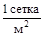 |
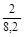 |
- |
|
умывальная |
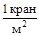 |
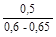 |
Под чертой - нижний предел для индивидуальных умывальников, верхний - для групповых круглых умывальников |
|
сушилка |
м2 |
2 |
- |
|
туалет |
» |
0,7 - 1,4 |
Нижний предел для мужчин, верхний - для женщин |
|
Помещения для обогрева рабочих |
» |
1 |
- |
|
Столовая на сырье с числом посадочных мест: |
- |
||
|
250 |
1 место/м2 |
2,5/9,12 |
Нормативный показатель на единицу измерения приведен с учетом полезной площади всех помещений. Нормативный показатель в обеденном зале на десять человек должен быть не менее 4,55 м2 во всех типах столовых |
|
150 |
то же |
2,5/9,87 |
|
|
50 |
» |
2,5/12,05 |
|
|
Столовая на полуфабрикатах с числом посадочных мест: |
|||
|
250 |
1 место/м2 |
2,5/8 |
То же |
|
150 |
то же |
2,5/8,4 |
|
|
50 |
» |
2,5/10,1 |
|
|
Буфет на количество мест: |
|||
|
24 |
» |
2,5/6,7 |
- |
|
12 |
» |
2,5/7,87 |
|
|
8 |
» |
2,5/8,92 |
|
|
Комната для приема пищи |
» |
2,5/3,5 |
Площадь комнаты должна быть не менее 12 м2 |
|
Комната для кормления грудных детей |
м2 |
0,5 |
Площадь комнаты должна быть не менее 15 м2 |
|
Помещение |
Единица измерения |
Нормативный показатель |
|
Здравпункт при числе работающих, чел.: |
||
|
от 200 до 1200 |
м2 |
70 |
|
» 1200 » 2000 |
» |
100 |
|
» 2000 » 3000 |
» |
150 |
Примечание. Состав и площади помещений здравпунктов принимаются в соответствии со СНиП.
|
Транспорт |
Коэффициент неравномерности поступления конструкций а |
|
Железнодорожный |
1,1 |
|
Водный |
1,2 |
|
Автомобильный |
1,3 - 1,5 |
Примечание. Коэффициент неравномерности потребления материалов и конструкций со складов в течение расчетного периода ориентировочно равен 1,3.
|
Железобетонные элементы |
Объем конструкций на 1 м2 площади склада с учетом проходов, м3 |
|
Колонны прямоугольного сечения для бескрановых зданий |
0,35 - 0,55 |
|
То же, с подкрановыми консолями |
0,15 - 0,25 |
|
Подкрановые балки |
0,4 - 0,45 |
|
Стропильные балки и фермы при хранении в вертикальном положении |
0,15 - 0,25 |
|
Плиты перекрытий и покрытий |
0,45 |
|
Стеновые панели |
1,3 |
|
Элементы стальных конструкций |
Масса конструкций на 1 м2 площади склада с учетом проходов, т |
|
Конструкции промышленных зданий: |
|
|
тяжелые |
0,65 |
|
средние |
0,5 |
|
легкие |
0,4 |
|
Колонны массой, т: |
|
|
до 5 |
0,3 |
|
» 15 |
0,35 |
|
более 15 |
0,65 |
|
Подкрановые балки при хранении в вертикальном положении массой, т: |
|
|
до 10 |
0,5 |
|
более 10 |
1 |
|
Формы при хранении в вертикальном положении массой, т: |
|
|
до 3 |
0,1 |
|
более 3 |
0,13 |
|
Прогоны, фахверки, связи сплошные |
0,5 |
|
Листы резервуаров, доменных печей и прочих листовых конструкций |
0,8 |
|
Секции постоянного объема |
0,3 |
|
Конструкции высотных зданий |
1 |
|
Мачты линий электропередач |
0,1 |
|
Оборудование |
Единица измерения |
Площадь склада с учетом проходов и проездов, м2/т |
|
Подъемно-транспортное: |
||
|
тяжелое |
т |
0,8 |
|
среднее |
» |
1,5 |
|
легкое |
» |
2,8 |
|
Производственное: |
||
|
тяжелое |
» |
0,7 |
|
среднее |
» |
1,3 |
|
легкое |
» |
2,5 |
|
Электродвигатели |
» |
0,5 |
|
№ строки |
Здания и сооружения |
Единица измерения |
Количество |
Ориентировочная стоимость, тыс. руб. |
|
I |
Титульные |
|||
|
II |
Не титульные |
|||
|
III |
Постоянные здания и сооружения, используемые для нужд строительства |
Форма 1
Объемы земляных работ с распределением по годам строительства
|
№ п.п. |
Земляные работы |
Объем работ |
|||||
|
единица измерения |
количество |
Распределение по годам строительства |
|||||
|
1-й |
2-й |
3-й |
и т.д. |
||||
|
1 |
Срезка растительного слоя |
м3 |
|||||
|
2 |
Вертикальная планировка: |
||||||
|
выемка |
» |
||||||
|
насыпь |
» |
||||||
|
3 |
Разработка грунта в котлованах и траншеях |
» |
|||||
|
4 |
Устройство обратных засыпок котлованов и траншей |
» |
|||||
|
5 |
Устройство грунтовых подушек |
» |
|||||
|
6 |
Устройство дренажных засыпок |
» |
|||||
|
7 |
Устройство выемок под автодороги и железнодорожные пути |
» |
|||||
|
8 |
Устройство насыпей под автодороги и железнодорожные пути |
» |
|||||
Примечание. Земляные работы определяются в зависимости от особенностей строительной площадки.
Форма 2
Объемы земляных работ с распределением по механизмам
|
№ строки |
Земляные работы |
Объем работ |
Распределение механизмов |
||||||||
|
единица измерения |
количество |
экскаваторы |
бульдозеры |
скреперы |
моторные и пневмоколесные катки |
||||||
|
% общего объема |
количество |
% общего объема |
количество |
% общего объема |
количество |
% общего объема |
количества |
||||
|
1 |
Срезка растительного слоя |
м3 |
|||||||||
|
2 |
Вертикальная планировка: |
||||||||||
|
выемка |
» |
||||||||||
|
насыпь |
» |
||||||||||
|
3 |
Разработка грунта в котлованах и траншеях |
» |
|||||||||
|
4 |
Устройство обратных засыпок котлованов и траншей |
» |
|||||||||
|
5 |
Устройство грунтовых подушек |
» |
|||||||||
|
6 |
Устройство дренажных засыпок |
» |
|||||||||
|
7 |
Устройство выемок под автодороги и железнодорожные пути |
» |
|||||||||
|
8 |
Устройство насыпей под автодороги и железнодорожные пути |
» |
|||||||||
Примечание. Номенклатура машин и механизмов устанавливается в зависимости от вида и особенностей строительства.
|
№ п.п. |
Потребитель |
Потребитель электроэнергии |
Приведенная мощность к ПВ-1 Рн, кВт |
Средние коэффициенты |
Расчетная нагрузка |
|
||||||
|
паспортная продолжительность включения ПВ в долях единицы |
количество, шт. |
установленная мощность, кВт |
||||||||||
|
спроса Кс |
мощности |
Активная Ра, кВт |
реактивная Ор, квар |
|
||||||||
|
cosj |
tgjф |
|||||||||||
|
единица |
паспортная |
|
||||||||||
|
||||||||||||
|
№ п.п. |
Пневмашины и пневмоинструменты |
Количество, шт. |
Удельный расход сжатого воздуха, м3/мин |
Коэффициент одновременности работы |
Расход сжатого воздуха, м3/мин |
|
Категория работающих |
Удельный вес работающих, % |
Численность, чел. |
Из них, занятых в наиболее многочисленную смену |
|
|
% общего числа |
Всего |
|||
|
Рабочие |
70 |
|||
|
Инженерно-технические работники |
- |
|||
|
Служащие |
80 |
|||
|
МОП и охрана |
- |
|||
|
Итого |
100 |
|||
|
№ п.п. |
Конструкции |
Годовой объем, м3/т |
% общего объема |
|
Сборные железобетонные |
|||
|
1 |
Колонны |
||
|
2 |
Балки |
||
|
3 |
Стеновые панели |
||
|
4 |
Стропильные балки и фермы при хранении в вертикальном положении |
||
|
5 |
Плиты перекрытий и покрытий |
||
|
Итого |
100 % |
||
|
Металлические |
|||
|
1 |
Колонны |
||
|
2 |
Подкрановые балки |
||
|
3 |
Стропильные фермы при хранении в вертикальном положении |
||
|
4 |
Прогоны, фахверки, связи |
||
|
5 |
Листовые конструкции |
||
|
6 |
Прочие конструкции |
||
|
Итого |
100 % |
1. СНиП 1.02.01-85. Инструкция о составе, порядке разработки, согласования и утверждения проектно-сметной документации на строительство предприятий, зданий и сооружений.
2. СНиП 3.01.01-85. Организация строительного производства.
3. СНиП III-4-80. Техника безопасности в строительстве.
4. Руководство по применению узлового метода проектирования, подготовки, организации и управления строительством сложных объектов и крупных промышленных комплексов/ ЦНИИОМТП. - М.: Стройиздат, 1982. - 36 с.
5. Рекомендации по внедрению вахтового метода организации строительства/ ВНИПИ труда в стр-ве. - М.: Стройиздат, 1984. - 45 с.
6. Рекомендации по организационно-технологическому обеспечению строительства промышленного комплекса. - М.: Стройиздат, 1984. - 112 с.
7. Методические указания по разработке проектов организации строительства крупных промышленных комплексов с применением узлового метода/ Приднепр. Промстройпроект. - М.: Стройиздат, 1984. - 64 с.
8. Методические рекомендации по применению узлового метода в строительстве/ ЦНИИОМТП. - М.: Стройиздат, 1975. - 80 с.
9. Методический пример проекта организации строительства фабрики окомкования/ ЦНИИОМТП. - М.: Стройиздат, 1983. - 56 с.
10. Инженерные решения по охране труда в строительстве: Справочник строителя. - М.: Стройиздат, 1985. - 278 с.
11. Инженерная подготовка строительных площадок и благоустройство территории: Справочник строителя. - М.: Стройиздат, 1985. - 287 с.
12. Канюка Н.С., Шивчук Б.М., Белостоцкий О.Б. Справочник по проектированию организации строительства. - Киев: Будiвельник, 1969. - 446 с.
13. Лубенец Г.К. Подготовка производства и оперативное управление строительством. - Киев: Будiвельник, 1976. - 732 с.
14. Нижниковский Г.С., Давыдов В.А., Диденко Л.М., Колесник Л.А. Монтажные работы при реконструкции промышленных предприятий. - Киев: Будiвельник, 1984. - 172 с.
15. Олейник П.П., Степанов И.В. Мобильные здания в строительстве. - М.: Стройиздат, 1985. - 136 с.
16. Одинцов В.П. Справочник по разработке проекта производства работ. - Киев: Будiвельник, 1982. - 184 с.
17. Расчетные нормативы для составления проектов организации строительства: Ч. 13/ ЦНИИОМТП. - М.: Стройиздат, 1973. - 174 с.
18. Рудаков В.В., Седорин Л.Л., Цыганков В.В. Организация строительства промышленных предприятий. - Киев: Будiвельник, 1969. - 287 с.
19. Монтаж стальных и железобетонных конструкций: Справочник монтажника/ Под ред. И.П. Олесова. - М.: Стройиздат, 1980. - 863 с.
20. Энергоснабжение строительства: Справочник монтажника/ Под ред. В.Г. Сенчева. - М.: Стройиздат, 1980. - 783 с.
21. Тополянский А.Б. Электроустановки строительных площадок и вопросы электробезопасности. - Л.: Стройиздат, 1972. - 309 с.
22. Уваров Е.П., Уманский Е.П., Розенфельд М.С., Апышков Г.И. Проектирование организации промышленного строительства: Краткий справочник. - Киев: Будiвельник, 1984. - 128 с.
23. Шахпаронов В.В., Аблязов Л.П., Степанов И.В. Организация строительного производства: Справочник строителя. - М.: Стройиздат, 1979. - 245 с.